4 Yırtıcılar
Balık Kartalı
Pandion haliaetus
Western Osprey
Yaygın ve orta sayılarda geçit türüdür.
Geçmişte iki alanda üremiştir. Terkos Gölü ve Belgrad Ormanı’nda 1860 ve 1964 yıllarında (Alléon 1880, Kumerloeve 1964a) ve Kızılırmak Deltası’nda 1966’da (Dijksen & Kasparek, 1985) yuvalamıştır. Ancak tekrar her iki alanda veya herhangi başka bir alanda ürediğine dair kanıt yoktur ki 1992 yılında Kızılırmak Deltası’nda çok kapsamlı bir üreyen kuş çalışması yapılmıştır. Kasparek (1989b) Türkiye’de azami 20 çiftin üreyebileceğini tahmin etmekte ve dört yeni alanda üreme zamanı kuşların bulunduğunu belirtmiştir. Bunlar 1962’de Amasya Merzifon Alıcık, 1966’da Giresun kıyıları, Temmuz 1966’da “yuva yakınındaymışçasına öten” bir kuşun görüldüğü Tatvan ve 1983’de Yeniçağa Gölü’dür. Ardından 1995’de Edirne Küplü ve Mayıs Haziran 2004’de İğneada’da ve 1990’larda Sinop kıyılarında üreme dönemi boyunca görülmüştür.
Geçit sırasında daha yaygın ancak seyrektir. Kasparek tarafından (1989b) incelenen 240 kayda göre; ilkbahar göçü mart ortası ile haziranın ilk haftasında olup tepe noktası orta ve geç nisan, medyan tarih 22 Nisan’dır. Sonbaharda Ağustos ortasından kasım başına kadar devam eder, eylül ortası ile ekim ortası arasında tepe yapar, medyan tarih 25 Eylül’dür. Sonbaharda daha boldur. Yırtıcı kuş gözlem noktalarında az sayılarda görülürler. Sonbahar 1976’da Borçka’da kayda değer şekilde toplam 24 birey sayılmış olsa da (Andrews vd. 1977).
Son on yılda birçok kışlama kaydı mevcuttur, batıda Gediz ve Büyük Menderes Deltası, Fethiye bölgesi, Göksu Deltası ve Çukurova sulakalanlarında az sayılarda kışlayabilir. 6 Şubat 1917’de Kırklareli Alpullu’da görülmüştür (Gengler 1920).
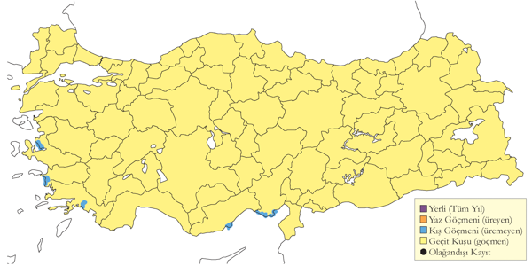
Üreme
KAR. Kızılırmak Deltası’nda Temmuz 1966’da kullanılan bir yuva bulunmuş, mayıs ortasından eylül ortasına kadar düzenli görülmüştür. MAR. Terkos Gölü’nde Acar ve diğerleri (1977) tarafından da kaydedilmiştir.
Alttürler ve Sınıflandırma
Türkiye’de nominat alttürü bulunur.
Ak Çaylak
Elanus caeruleus
Black-winged Kite
Lokal ve az sayıda yerlidir.
Güneydoğu Anadolu’ya yeni yerleşen bir yaz konuğudur. 1999 yılından itibaren her yıl Osmaniye ve Hatay ile Diyarbakır ve Mardin arasında kaydedilmiş, 2013 yılında Bozova’da yuvaladığı tespit edilmiştir. Bu dönemde Güneydoğu dışındaki kayıtları: 24 Eylül 2009’da İstanbul Boğazı, 25Aralık 2010’da Göksu Deltası, 16 Şubat 2010’da Küçükdere (Denizli), 27 Mayıs 2010’da Çaldıran ve Soğuksu arasında, 7 Eylül 2012’de Rize, 13-28 Temmuz 2013’te Mogan Gölü’nde kaydedilmiştir.
1950 öncesinde kayıtlar şu şekildedir: Ocak 1876’da (Danford 1878) Mersin’de Zebil’de (şimdiki adı Sebil) muhtemelen bir çift olan iki birey, 11 Nisan 1935’te Adana’da iki birey Bird (1937) tarafından kaydedilmiştir. İstanbul Boğazı’nda 14 ve 21 Ekim 1931 ve Mart ve 6 Nisan 1933 tarihlerinde birer, 17 Nisan 1953 tarihinde de aynı yerde iki birey görülmüştür (Kumerloeve 1958b). 1950 sonrasında ise; 17 Nisan 1968’de bir birey Uluabat Gölü’nde gözlenmiştir (OST 1972). 1 Ağustos 1984’te Niğde’nin 20 km batısında kaydedilen bir erişkin (Martins 1989), 28 Mart 1998’da bir birey Diyarbakır’da kaydedilmiş (Kirwan vd. 2003), 24-25 Nisan 2006’da iki yaşında bir birey Göksu Deltası’nda fotoğraflanmıştır (Dutch Birding: 170, 174), iki tane Yamansız (Antalya) 12 Nisan 1998’da gözlenmiştir (Erdoğan vd. 2000).
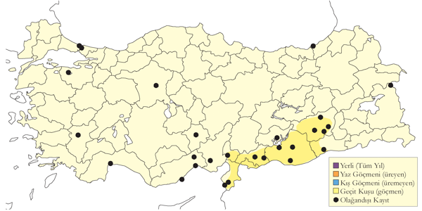
Üreme
Türkiye’de yuvalamaz.
Alttürler ve Sınıflandırma
Türkiye’de Hindistan kökenli vociferus nominat alttürü olduğu iddia edilmiştir.
Sakallı Akbaba
Gypaetus barbatus
Bearded Vulture
Lokal ve seyrek yerlidir.
Genellikle 1500 - 4000 metre yüksekliklerde dağlık alanlarda oldukça yaygın yerli bir türdür, üremeyen ve genellikle ergen bireyler düzensiz bir şekilde düşük rakımlarda da görülür ya da üreme mevsimi dışında gözlemlenir. Uygun habitatların olmadığı dâhil her yerde görülür. Tür eskiden daha yaygındı. Örneğin Danford (1878) “Toros Dağları’nda bu tür o kadar yaygın ki görmediğimiz tek bir gün bile olmadı” derken Kumerloeve (1961) bugün artık kayıtların gelmediği eski üreme alanlarına referans vermektedir.
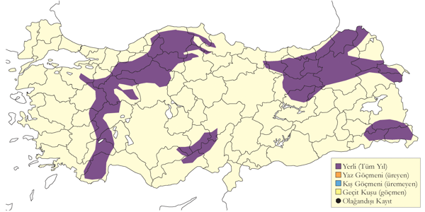
Üreme
Yüksek dağlardaki büyük yarlarda ürer. En uygun yarlar İç Anadolu’da Köroğlu Dağları ve Sündiken Dağları üzerinde bulunur (Heredia vd.1997). Muhtemelen batıdaki en önemli üreme alanı olan Uludağ’ın doğu yamacında 2000 metrenin üzerinde 1-3 çift (Jetz 1995), Doğu Karadeniz Dağları’nda 20 çift (Magnin ve Yarar 1997) üremektedir. Yüksek yarlarda bulunan oyuklarda yuvalar (Danford 1878); bunun dışında hayvan kemikleriyle çevrili büyük ve çubuk ve dallardan oluşan nispeten sığ bir yuvası vardır. Yuvanın olduğu yer dışkı izleri nedeniyle kolayca tayin edilebilir (Harrison ve Castell 2002); Pozantı (Adana) yakınlarında bir yuvanın bez parçaları ve kadın saçlarıyla çevrildiği de gözlenmiştir (Danford 1878). Türkiye’de gözlenen yumurta sayısı 1 (2 yuvada), 2 (1 yuvada). Yavru sayısı: 1 (1 yuvada). AKD. Toros Dağları’nda üreme ocak sonlarında başlar (Danford 1878); 2 Şubat 1876 tarihinde Pozantı’da bir yuvada iki yumurta, yine 1876 Şubat sonunda başka bir yumurta (Danford 1878) kaydedilmiştir. EGE. 8 Şubat 1902 tarihinde Beşparmak Dağları’nda (Denizli) F. C. Selous tarafından toplanmış bir yumurta Tring Doğa Tarihi Müzesi’nde sergilenmektedir. Yumurtalar 1 Ocak gibi bırakılmış olsalar bile yavrular haziran ortasına kadar uçamadığından muhtemelen önceki yılın genç bir bireyi 15 Nisan 1996 tarihinde Demirkazık’ta kaydedilmiştir (Toplam üreme süresi 5,5 ay sürmektedir). KAR. Çiçekli’de (Rize) 6 Mayıs 1970 tarihinde içinde tek yavru bulunan bir yuva ve Merzifon’un güneybatısında bulunan Alıcık’ta 25 Temmuz 1974 tarihinde bir erişkin ve genç birey gözlemlenmiştir. Krüper tarafından komşu Ermenistan’da iki yuvadan toplanan birer yumurta 3 Ocak 1881’de toplanmıştır, 14 Şubat 1872 ve Şubat 1873’te Yunanistan’da iki yuvadan toplanan birer yumurta bugün Tring Doğa Tarihi Müzesi’nde sergilenmektedir.
Alttürler ve Sınıflandırma
Roselaar (1995) Türkiye’nin aureus alttürünün yayılış alanında olduğunu doğrular. Ancak birçok yazar Kuzey Afrika’da tanımlanmış nominat alttürler aureus arasında çok fark olmadığını ve aureus formunu alttür olarak değerlendirmemeyi tercih eder.
Küçük Akbaba
Neophron percnopterus
Egyptian Vulture
Yaygın ve yer yer çok sayıda bulunan yaz konuğu ve yaygın geçit türüdür.
Çeşitli dağlık alanlarla diğer açık alanlar bulunur, genellikle 1000-1200 metre yüksekliklerde ürer. Bazen yaz aylarında nehir deltaları gibi alçak ovalara indiği görülür. Türkiye’ye mart başından itibaren varır, eylül sonunda çoktan Türkiye’den ayrılmıştır. Ekim ortasına kadar kalabilir.
İlkbahar göçü haziran ayının ilk hafta sonuna kadar devam edebilir. Her ne kadar Borçka’da çok daha az sayılarda düzensiz bir şekilde görülse de diğer iki göç izleme noktasında daha yaygın şekilde görülürler. Eylül ayında en yüksek sayılarda görülecek şekilde ağustos ortasından ekim başına kadar göç döneminde tüm ülkeyi boydan boya geçerlerken bolca görülürler. Kaydedilen en yüksek sonbahar göçü sayıları 1971 yılında Boğaziçi’nde 544, 1976’da Belen geçişinde 874 bireydir (Sutherland ve Brooks 1981a). Boğaziçi’nde bir günde geçen maksimum birey sayısı 13 Eylül 1974 tarihinde 152 ve Belen’de 12 Eylül 1976 tarihinde 124 bireydir. 26 Ocak 1993 tarihi tarihinde Kocaçay Deltası’nda bir kış kaydı da bulunmaktadır.
Türün eskiden daha yaygın olduğu oldukça açık ki, türün bir defasında İstanbul’da yuvaladığı bile bilinmektedir: Alléon ve Vian (1869) her yıl İstanbul ve çevresinde 1000 civarında yavrunun büyütüldüğünü tahmin etmiş ve 20. yüzyılda Bird (1937) ve Hollom (1955) türdün güney Anadolu’da şehirlerin civarında yaygın şekilde bulunduklarından bahsetmiştir. Kasparek (1992a) türün popülasyonunun 20. yüzyıl başlarında azalmaya başladığı yorumunda bulunmuş, bugünkü azalmış haline ise 1960’ların başında geldiğini iddia etmiştir.
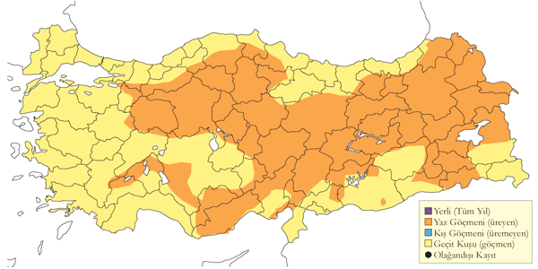
Üreme
Çoğunlukla yar ve geçitlerle kaplı tepelik ve dağlık alanlarda, aynı zamanda küçük mağaralarla iç tarafları uygun yuvalama alanları olan açıklık arazilerde ürer. Van kalesinde de yuva yapımı kaydedilmiştir. Dışkıyla kaplanmış üreme alanları genellikle her yıl yeniden kullanılır. Yün gibi çeşitli malzemeler ve dallardan yapılmış bir yuva Karadağ’da kaydedilmiş, yuvanın bulunduğu mağaranın tabanının ise kaplumbağa kabuklarıyla kaplandığı görülmüştür (Ramsay 1914). Türkiye’de gözlenen yumurta sayısı 2 (5 yuvada). Yavru sayısı: 1-2 (2 yuvada). EGE. Selous 7-8 Mayıs 1899 tarihlerinde Aydın yakınlarında 6 yuva bulmuştur: İki yuvada üzerine kuluçkaya yatılmış iki yumurta (muhtemelen ilk yumurta nisan sonu bırakılmış) bulunmuş, bir yuvanın yumurta bırakmaya hazır olduğu görülmüş ve geri kalan ve ulaşılamayan diğer 3 yuvada da erişkinlerin kuluçkada oturdukları görülmüştür. İÇA. 21 Nisan 2004’de Ereğli Sazlıkları yakınlarında bir erişkin bireyin kuluçkada oturduğu ve 6 yuvada 6 Mayıs’tan itibariyle yumurtaları olduğu tespit edilmiştir. AKD. 10 ve 26 Mayıs tarihlerinde iki yuvada yumurta görülmüş, haziran ayında iki erişkin bireyin muhtemelen yavruların da olduğu yuvalarda oturduğu gözlemlenmiştir. DOA. 2 Haziran 2001’de Van yakınlarında bir erişkin bireyin kuluçkada ya da yavrularının üzerinde oturduğu tespit edilmiştir; Kağızman’da haziran sonu muhtemelen yavrularıyla beraber yuvada iki çift görülmüş, 16 Ağustos 1972 tarihinde ise bir yuvada oldukça büyümüş bir yavrunun ebeveynleri tarafından beslendiği kaydedilmiştir. Bu da mayıs başı gibi yumurtaların bırakıldığını göstermektedir.
Alttürler ve Sınıflandırma
Türkiye’de nominat alttürü bulunur.
Arı Şahini
Pernis apivorus
European Honey Buzzard
Nispeten lokal ve seyrek yaz konuğu, yaygın ve çok sayıda bulunan geçit türüdür.
Ormanlık alanlarında ürerler. Üreme ve yayılış durumunun anlaşılması geç göç eden bireylerden dolayı oldukça zordur.
Göç döneminde ana üç darboğaz bölgesi olan İstanbul Boğazı, Çoruh Vadisi ve Belen Geçidi’nde başta olmak üzere ülke çapında yaygın ve yüksek sayılarda görülürler. Bahar göçü hemen hemen her yerde nisan ortası ile haziran başına kadar sürer. Mayıs başı ve mayıs ortası geçişin en yoğun olduğu dönemdir. Bahar göçü İstanbul Boğazı’nda nadiren birkaç yüzü geçer. Her ne kadar 2006 yılının mart ortası ile mayıs ortası arasında 8981 adet sayılmıştır (İKGT 2010). 23 Mart 1695 ve 6 Nisan 1965 tarihleri arasında yapılan sayımda 1104 birey kaydedilmiş olup (Collman ve Croxall 1967), ancak bu kayıt diğer kayıtlarla karşılaştırıldığında geçersiz konumdadır. Rize’de Fırtına Deresi ağzında 27 Nisan ve 10 Haziran 1993 tarihleri arasında 29.237 birey sayılmıştır (4 Mayıs’ta 10.471 birey), yine bu sayımlarda tanımlanamayan 6855 yırtıcının da muhtemelen arı şahini olduğu düşünülmektedir (Faldborg 1994). Artvin’in Hopa ilçesinde 21 Mart - 14 Mayıs tarihleri arasında 25.813 birey sayılırken, 21 Nisan - 5 Mayıs 1995 tarihleri arasında 1964 birey sayılmıştır (Péske 1995). 16 Nisan ve Haziran başı 1992 tarihleri arasında Kızılırmak Deltası’nda 1868 birey kaydedilmiştir (Hustings & Dijk, 1994).
Sonbahar göçünde ilk bireyler ağustos ayının ilk yarısında gelmeye başlar, eylül başında en çok geçiş yaşanır, geçiş ekim ortasına kadar devam eder. Sonbaharda İstanbul Boğazı’nda en yoğun geçiş ağustos sonu ve eylül başı olur ve 1971’de toplam 25.571 birey sayılmıştır. Bir günde geçen maksimum birey sayısı 29 Ağustos 1968 tarihinde sayılan 6655 bireydir. Bunun dışında 19 Eylül 2014’de Bursa şehir merkezine sabah hepsi genç bireyler olan toplam 150 birey sayılmış, aynı gün İstanbul Boğazı’nda tek bir arı şahini görülmemiştir. Bu sayı İsveç Falstebro’dan bilindiği gibi gençlerin daha geç geçtiklerini ve İstanbul Boğazı’nı kullanmayabileceklerini gösterir.
Borçka’da detaylı sayımların yapıldığı ve yayınladığı tek yıl 1976 olup (Andrews vd. 1977), sayılan birey sayısı toplamda 138.000 ve tek günde 4 Eylül 1976 tarihinde 37.000 bireydir. Buradaki geçiş ağustos sonunda en yüksek seviyeye ulaşır ve kısmen eylüle sarkmıştır. 5 Eylül 1988’de Hopa üzerinde 20.000 birey kaydedilmiştir. Belen Geçidi, özellikle de son yıllarda, sistematik olarak çok az sayılmıştır. 15.791 bireyin sayıldığı 1976 yılı sonbaharında en kapsamlı sayımlar yapılmıştır. Bu alanda en çok geçişin olduğu dönem ise şüphesiz ki eylül ortasıdır. Bir günde sayılan azami birey sayısı ise 5170’dir (Sutherland ve Brooks 1981a). 31 Aralık 2000 tarihine ait Hatay’dan bir kış raporu mevcuttur.
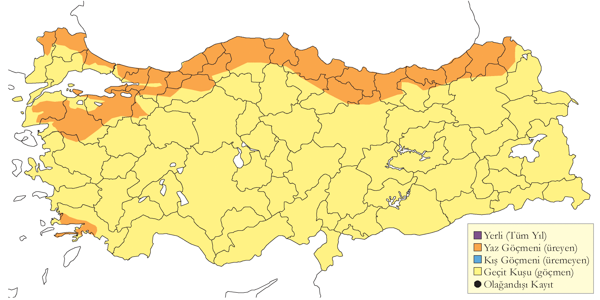
Üreme
Mayıs ve ağustos aylarında (tahmin edilen üreme mevsimi) uygun orman ve koruluk alanlarda üredikleri düşünülse de henüz teyit edilmiş üreme kayıtları mevcut değildir. KAR. Kızılırmak Deltası’nda özellikle Yörükler Ormanı’nda 12-20 çiftin ürediği tahmin edilmiş, üreme göstergesi olacak şekilde erişkin bireylerin kur davranışı yaptığı, orman alt örtü ve üst kısımlarında uçuşlar gerçekleştirdikleri görülmüş, birçok çiftin yumurtlamaya başladığı 10 Haziran civarında biten araştırmalarda herhangi bir yuvaya rastlanamamıştır (Hustings & Dijk, 1994). Başka yerlerde yuva çöplerden oluşmuş büyük bir yapı olup, kenarı yapraklarla astarlanmıştır. Ağaçların yüksek yerlerine yapılan yuvalara genelde haziran ayında iki yumurta bırakılır ve yavrular ağustos ayının ikinci yarısında yumurtadan çıkar.
Alttürler ve Sınıflandırma
Monotipik bir türdür.
Tepeli Arı Şahini
Pernis ptilorhynchus
Crested Honey Buzzard
Çok nadir ve lokal geçit türüdür.
Üç kayıt mevcuttur: 27 Eylül 1979’da bir erişkin dişi ve 25 Eylül 1996’da bir erişkin erkek birey Artvin Borçka’da fotoğraflanmıştır (Kirwan ve Martins 2000a). Son olarak 18 Eylül 2013’te Borçka’da fotoğraflanmıştır. Son zamanlarda Batum’da yapılan kapsamlı çalışmalarda 2014 sonbaharında 25, 2013 sonbaharında ise toplam 47 tane geçtiği sayılmış, bölgeden düzenli geçtiği tespit edilmiştir (Batumi Raptor Count).
Orta Doğu’da gayet de yaygın olduğunun ortaya çıkması son yıllarda bölgedeki ornitoloji keşiflerden ilgi çekicisidir. Shirihai vd. (2000) 21. yüzyıl öncesi tüm kayıtları özetlemiştir: Mısır’da bir birey (çoğunun Afrika’da kışladığını gösteriyor), İsrail’de 17, Umman’da 1, Suudi Arabistan’da 2, çoğu kışın olmak üzere en az 12 birey Birleşik Arap Emirlikleri’nde kaydedilmiştir. Bunun yanında Lübnan’dan yeni 2 kayıt mevcuttur (Ramadan Jaradi vd. 2008). Gözlemcilerce türle ilgili farkındalığının artmasıyla 2002’den beri yeni birçok kaydı ortaya çıkmıştır: İsrail’de maksimum sayıda bireyin geçtiği 2002 ilkbaharı, Ürdün’den gelen ilk kayıtlar ve Birleşik Arap Emirlikleri’nde yaklaşık 18 kaydı vardır (Balmer ve Betton 2002b).
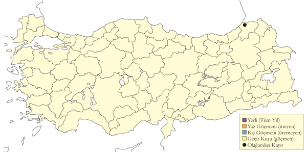
Üreme
Türkiye’de yuvalamaz.
Alttürler ve Sınıflandırma
Tahnit verisi bulunmamaktadır, fakat yayılış gösterdiği alanlarda alttür orientalis olmalıdır.
Kızıl Akbaba
Gyps fulvus
Griffon Vulture
Lokal ve az sayıda yerli ve yarı göçmendir.
Genelde yüksek dağlı bölgelerde, bazen de iyi orman örtüsüne sahip alanlarda, esasen 1500 - 4500 metre yükseklikler arasında kaydedilirler. Üreyen kuşlar iki noktada yoğunlaşırlar. Orta Toroslar’da Antalya, Isparta ve Mersin yakınında küçük koloniler halinde yuvalar. Orta Toroslar Dağlarında, özellikle Sütçüler civarıyla Göksu nehrinin kanyonunda tahminen 35-50 çiftin ürediği, yine 2-3 çiftlerden oluşan başka ufak kolonilerin olduğu tahmin edilmektedir (Vaassen 2000). Popülasyonun çoğunluğu Çoruh Vadisi ve çevresinde Kuzeydoğu Anadolu’da yoğunlaşır. Van, Hakkari, Şırnak ve Siirt çevresinde de sağlıklı bir popülasyonu olabilir. İç Anadolu’nun kuzeybatı kısımlarında görülen kuşlar muhtemelen üremeyen yaz konuklarıdır. Ülkedeki toplam popülasyon 100 - 1000 çift (Tucker ve Heath 1994) olarak tahmin edilmiş olsa da daha sonra popülasyonda gerçekleşen azalmalar Vaassen’in (2001) 35-50 çifti Orta Toroslar’da bulunan toplam 150-500 çiftten fazla olamayacağı tezini doğruluyor.
Eskiden türün bugün az sayılarda oldukları ya da artık tamamen tükendikleri noktalarda daha yaygın olduğu bilinmektedir (örneğin Gaziantep ve Bürücek (Rize); bkz. Kumerloeve 1961). 19. yüzyılın ikinci yarısında türün yayılım gösterdiği alanların alçak düzlükleri, örneğin İzmir civarı ve Büyük Menderes deltası (von Gonzenbach 1860, Kasparek 1988) de kapsayacak şekilde çok daha yaygın olduğunu biliyoruz. Hatta Hollom (1955) 1950ler gibi oldukça geç bir tarihte türü Adana şehir merkezi üzerinde kaydetmiş ve Kumerloeve (1957c) de türün Bergama’da ürediğini bildirmiştir. Bugünkü popülasyonun 1960’lı yıllarda bugünkü seviyesine inmiştir (Kasparek 1992a).
Balkanlar’da yuvalayan kuşlar ve İsrail’de üreyen kuşlar ülke üzerinden kuzeybatı -güneydoğu ekseninde hareket eder. Bu nedenle göç döneminde daha yaygındır. 1931’de İstanbul Boğazı’nda 165 birey (Steinfat 1932) ve Belen Geçidinde 1976 yılında sadece 6 günde 125 birey sayılmıştır (Sutherland ve Brooks 1981a). İstanbul Boğazı üzerinden 22 Eylül ve 10 Ekim 2008 tarihleri arasında toplam 57 tane sayılmış olup (Milvus Group), bu son yıllardaki bir göç gözlem noktasındaki en yüksek toplam sayıdır. Fakat yakın tarihlerde bu sayılar çok daha azdır, örneğin 19 Eylül - 2 Ekim 2002 tarihleri arasında sadece 13 birey sayılmıştır (Birding World 15: 423). Sonbahar göçü genelde eylül ortasından ekim başına kadar sürer. İlkbaharda ise sadece Mauve’nin (1938) kaydı olsa da (Beaman 1977). Borçka’da 1977 Ekim ortasında 30 birey kaydedilmiştir.
Özellikle batı ve orta bölgelerde az sayılarda kışlarlar, türün çoğu bireyleri ise kışın daha yüksek yerlerden alçak kesimlere inerler, örneğin hala bazen İzmir çevresinde kış aylarında görülürler.
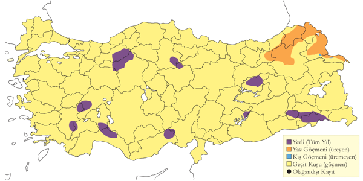
Üreme
Yüksek yarların, kayalık geçitlerin ve kayalık çıkıntıların olduğu dağlık bölgelerde genellikle 2-8 çift civarında küçük koloniler halinde ürerler. Fakat 1993’te İspir’de bir noktada 15 yuva (Faldbord 1994) ve Doğu Anadolu’da Nemrut Dağı’nda sadece tek bir yuva görülmüştür (Magnin ve Yarar 1997). Yarların kaya oyukları ya da çıkıntılarında, yapraklı dallarla ve birikintilerle astarlanmış düz ufak bir yuva yapar. Türkiye’de gözlenen yumurta sayısı 1 (6 yuvada). Yavru sayısı: 1 (17 yuvada). AKD. Toroslar’ın güney yamaçlarında şubat sonu - mart başı gibi yuvasını yapar (Danford 1878); 13 Nisan 1971’de Alanya ve Silifke arasında bir yuvada bir adet yumurta, başka bir yuvada muhtemelen bir yavru ve 5 günlük başka bir yavru tespit edilmiştir. Aynı bölgede 4 Haziran 1971 tarihinde içinde neredeyse uçmaya hazır yavruların bulunduğu 8 yuva kaydedilmiştir (Warncke 1972). 5 günlük yavrular bu yuvalarda yumurtaların şubat ortası gibi bırakıldığını gösterse de erken tarihten dolayı 4 Haziran 1971’de 8 yuvada bulunan yavruların uçmaya hazır olduğu kaydında bir hata olabilir; nitekim geriye dönük bir hesaplamada bu yumurtaların koyuluş tarihinin aralık sonunda olması gerekir. Yavrular 10 haftalıkken tüylendiğinden (fakat 16 haftalık olmadan uçamazlar) bu yumurtaların şubat başında bırakıldığını varsayıyoruz. 12 Eylül 1972’de Karanfil Dağı’nda her birinde birer yavru bulunan 5 yuva tespit edilmiş, artık tüylenen bu yavruların halen yuvada durdukları gözlenmiştir. EGE. Denizli yakınlarında Akdağ’da 3 çift, Kızılcahamam’da 2 çift gibi diğer bölgelerde de ufak koloniler mevcuttur. Bugün Tring Doğa Tarihi Müzesi’nde bulunan birer yumurta F. C. Selous tarafından 25 Mart 1897 tarihinde Beşparmak Dağı’ndaki (Denizli) iki yuvadan toplanmış olup, daha sonra yine Selous tarafından 22 Mart 1897 ve 30 Ocak 1902 tarihlerinde 3 kuluçkadan birer yumurta daha toplanmıştır. DOA. 3 Eylül 1992’de Tuzluca’nın 30 km batısında en az üçünde yavru olan 5 yuvanın bulunduğu bir koloni tespit edilmiştir. 3 Eylül 1973’te Kağızman’ın batısı Arastal’da yavrularıyla birlikte 5 çift, 4 Temmuz 2001’de Iğdır’da yuvalayan 20 erişkin birey, 17 Mayıs 1975’te Hakkâri yakınlarında da 11 bireylik bir koloni kaydedilmiştir. KAR. İspir’de 10 ve 11 Mayıs 1991 tarihinde 35 birey ve 17 yuva, Haziran 1992’de 13 birey ve 8 yuva ve 10 Mayıs 1993’te 18 birey ve 15 yuva ve 1992’de muhtemelen 15’ten fazla yuva (Yarar ve Magnin 1993) kaydedilmiştir. MAR. Uludağ’da ise türün ürediğinden şüphelenilmektedir (Magnin ve Yarar 1997).
Alttürler ve Sınıflandırma
Türkiye’de nominat alttürü bulunur.
Kara Akbaba
Aegypius monachus
Cinereous Vulture
Nispeten yaygın, yer yer çok sayıda bulunan yerlidir.
Genellikle orta yüksekliklerdeki dağlık ormanlarda genelde 900 m üzerinde ürer. Batı ve kuzeydeki düşük rakımlı kurak dağlık alanlarda ve çevresindeki ovalarda kaydedilmiştir. Her ne kadar tür orta ve doğu Karadeniz Bölgesiyle Doğu Anadolu’dan düzenli olarak kaydediliyor olsa da Türkiye’de türün ürediği ana bölge İç Anadolu’nun batı ve kuzey kesimleridir. Temmuz 2007’de Kızılcahamam ve Bolu civarlarında 60 birey kaydedilmiştir. Orta ve Doğu Toroslar’da, örneğin Konya il sınırlarında ufak bir popülasyon yaşamını sürdürüyor olabilir. Bazen Çanakkale ve İstanbul Boğazı’nda sonbahar göçünde ağustos sonundan eylül sonuna kadar düzensiz şekilde kaydedilir. İlkbaharda İstanbul Boğazı’nda az sayıda kaydedilir. 15 Mart ve 31 Mayıs 2010’da toplam 4 tanesi kaydedilmiş (İKGT 2010), 2006’daki benzer çalışmada ise sadece bir tane geçmiştir (Üner vd. 2010) İlkbahar aylarında Borçka’da çok nadirdir. Eskiden göç zamanında Marmara bölgesinde yaygın şekilde görüldükleri söylenmektedir (Alléon ve Vian 1869).
Türün Türkiye’de üreyen popülasyonu 20. yüzyılda oldukça azalmış ve muhtemelen de azalmaya devam etmektedir. Elimizdeki dolaylı kanıtlara bakıldığında Toroslar ve 1970’lerin başında ufak bir popülasyonun bulunduğu Ankara Beynam Ormanı’nda yok olmuştur. Beynam civarındaki yok oluşun sebebi avcılık ve zirai ilaç kullanımı olduğu düşünülmektedir. Kasparek (1992a) Türkiye’de üreyen çift sayısının 50 çiftten az olduğunu söylese de 9 Ekim 2005’de İç Anadolu’nun kuzeydoğu kısmında Beypazarı ve Kıbrısçık arasında görülen 40 çift Kasparek’in tahmininin oldukça düşük olduğuna işaret ediyor. Son yıllarda türün Doğu Anadolu’daki üreme yayılışı oldukça anlaşılmıştır. Buna ek olarak eskiden türün bulunduğu Ilgaz Dağları ise son zamanlarda az ziyaret edilmiştir. Bu gibi sağlıklı alanlarda türün sağlıklı popülasyonları bulunabilir.
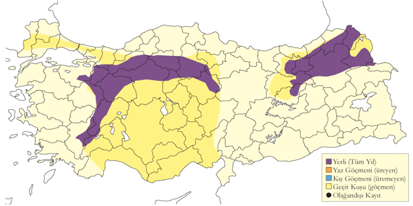
Üreme
Genellikle iğne yapraklı ormanlarında, dağlık alanların ulaşılması zor vadilerinin eğimli yamaçlarında bulunan yaşlı çam ağaçlarına yuva yaparlar. Her ne kadar aynı vadide bir kaç çiftin birbirine yakın yuvalarda üredikleri görülmüşse de, genelde koloni halinde üremezler. Tür, yuvasını yaşlı çam ağaçlarının genellikle en tepesine, büyük dal parçalarından yapar ve çevresi yapraklı dallarla, kabuklarla ve çeşitli birikintilerle astarlar. Yeni yuvalar da büyüktür, fakat her yıl kullanılan eski yuvalar daha büyüktür. Yuvalama süresi oldukça uzundur: Kuluçka süresi 54 gün kadar sürerken yavru da yaklaşık 100 gün kadar yuvada kalır ki mart başında bırakılmış bir yumurtadan çıkan bir yavru ancak temmuz sonunda yuvadan uçmaktadır. Türkiye’de gözlenen yumurta sayısı 1 (3 yuvada). Yavru sayısı: 1 (5 yuvada). EGE. Beşparmak Dağı’ndan (Denizli) F. C. Selous tarafından 8 Mart 1897, 10 Mart 1897 ve 25 Mart 1897 tarihlerinde toplanan 3 yumurta bugün Tring Doğa Tarihi Müzesi’nde yer almaktadır. İÇA. Kızılcahamam’da 15 Haziran 1983 tarihinde bulunan bir yuvada “yaklaşık bir ördek büyüklüğünde” bir yavru kaydedilmiştir (Barış vd. 1984). Aşağıda diğer kayıtların detayları verilmiştir (Heredia vd. 1997): Temmuz 1994’te Soğuksu Milli Parkında 4 yuvada tamamen tüylenmiş 4 yavru; 1995 senesinde (7-21 Mayıs 1995) bu yuvaların yeniden kullanıldığı, bu 4 yuvaya ek olarak 2 yuva daha bulunmuştur. Bu 6 yuvadan 5’i ise akarsu yakınında bulunan 1500 metre yüksekliğinde bir vadide bulunmaktaydı. 11 Mayıs 1995 tarihinde Hamam Dağı’ndaki bir vadide 1300 metre irtifadaki çam ağaçlarında bulunan iki yuvada yaklaşık 14 günlük yavrular tespit edilmiştir. Muhtemelen bu yuvalarda yumurtalar 5 Mart civarında bırakılmış. Murat Dağı’nda (Afyon ve Kütahya) ormancılık faaliyetleri yürütülen bir vadide 1-2 Mayıs 1996 tarihlerinde 1400 ve 1600 metre yüksekliklerde kullanılan iki yuva tespit edilmiştir.
Alttürler ve Sınıflandırma
Monotipik bir türdür.
Yılan Kartalı
Circaetus gallicus
Short-toed Snake Eagle
Yaygın yaz konuğu ve geçit türüdür.
Daha çok kurak, kısmen ağaçlık, genellikle tepelik bölgelerde ürer. Özellikle 0’dan 2000 metreye kadar ortalama yüksekliklere sahip kuru, açık ya da tepelik alanlarda görülür. Üreme mevsimi nisanda başlar. Eskiden en yaygın görülen kartal olarak bahsedilirdi (bk. Nisbet ve Smout 1957).
Bahar göçü mart ortasından mayıs sonuna kadar sürer. En çok göç eden bireyin eylülün ikinci yarısı ve ekimin başı gibi görüldüğü sonbahar göçü ağustos ortası ve ekim sonu arasında gerçekleşir. İlkbaharda tıpkı 1993 yılında (1 Mart - 9 Eylül) İstanbul Boğazı’nda görülen 204 birey gibi ülke çapında kayda değer sayılarda hareket ederler. 2006 yılında mart ortası ile mayıs sonu arasında toplam 473 tane sayılmıştır (Üner vd. 2010). Ardından 2010 yılında 15 Mart ve 31 Mayıs arasında toplam 651 tane sayılmıştır (İKGT 2010).
Özellikle İstanbul Boğazı ve Belen Geçidi’nde yaygın şekilde görülürler. İstanbul Boğazı’nda 1971 yılında toplam 2342 ve sadece 26 Eylül’de 850 birey sayılmıştır. Bugüne kadar yapılan en kapsamlı sayımda 2008 yılında 22 Eylül ve 10 Ekim arasında toplam 4562 tane sayılmış (Milvus Group), aynı sezon 24 Kasım 2008’de iki geç kuşun geçit yaptığı kaydedilmiştir (Sandgrouse 31: 100). Belen Geçidi’nde 1976 senesinde toplam 727 ve sadece 18 Eylül’de 114 birey sayılmıştır (Sutherland ve Brooks 1981a). 18 Eylül - 13 Ekim 1994 tarihleri arasında Çukurova üzerinden geçen 837 birey kaydedilmiştir (Thorpe ve J. Young). Ardından 2007 yılında 26 ve 28 Eylül arasında Çukurova Bölgesi’nde 1193 tanesi sayılmıştır. Diğer göç izleme noktalarına göre tür burada daha az sayılarda sayılmıştır: Borçka’da 1976 sonbaharında maksimum 243 (Andrews vd. 1977) ve 1994 ilkbaharında Hopa yakınlarında 395 birey sayılmıştır.
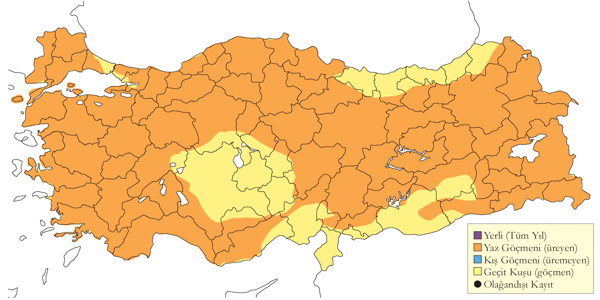
Üreme
Ağaçlarda, ara sıra da yarlarda yuva yapar. Yuvasının genelde geniş, etrafı yapraklı dallarla astarlanmış orta kısmı oyuk şeklinde küçük dallarla ve çerçöple yapılmış ince bir yapısı vardır. Muhtemelen her yıl yeni yuva yapar. Bir bölgede genelde başarıyla kullanılan 2-3 yuva bulunur, fakat aynı yuva sonraki yıllarda kullanılabilir. Yumurta sayısı 1 (4 yuvada). Yavru sayısı: 1 (2 yuvada). İÇA. Avanos’ta bir badem ağacında bulunan yuvada 3 Haziran 1971’de bir yumurta, 22 Haziran 1971’de bir yavru ve aynı yuvada 30 Mayıs 1972’de bir yumurta kaydedilmiştir. 1971 kaydı bize bu yuvada yumurta bırakılmasının 11 Mayıs’ta olabileceğini gösteriyor. 25 Haziran 1977 yılında Delice’de (Çorum) bir kaya çıkıntısında bulunan yuvada yaklaşık 18 günlük bir yavru tespit edilmiştir (Pforr ve Limbrunner). Bu yuva da bize yumurtanın 21 Nisan gibi bırakıldığını işaret eder. 13 Mayıs 1986 tarihinde Kızılcahamam’da türün kur davranışı yaptığı görülmüştür. EGE. Krüper, bugün Tring Doğa Tarihi Müzesi’nde bulunan iki ayrı yuvadan iki yumurtayı İzmir civarından 18 Nisan 1871 ve 26 Mayıs 1872 tarihlerinde toplamıştır. MAR. 23 Nisan 1970 tarihinde Belgrad Ormanı’nda ve 21 Haziran 1973 tarihinde Terkos Gölü’nün batısında türün kur davranışı sergilediği gözlenmiş; 1993’te Kocaçay Deltası’nın etrafındaki tepelerde en az iki çift üremiş ve bir erişkin bireyin yuvaya yiyecek taşıdığı tespit edilmiştir (Ertan 1996). GDA. 7 Mayıs 1992’de Gaziantep’te bir erişkin bireyin yılan taşıdığı ve 8 Haziran’da sarp bir kaya üzerindeki yuvada bir dişinin kuluçkada yattığı gözlendi. AKD. 23 Mart 1993 tarihinde Taşucu tepelerinde bir çiftin kur davranışı yaptıkları, 11 Nisan 1991’de Suğla Gölü’nde bir çift ve 3 Mayıs 1996’da da Dalyan bölgesinde 3 birey kaydedilmiştir. Yine 9 Mayıs 1995’te Darım Dağı’nda bir erişkin bireyin, 22 Mayıs 1995’te de Termessos’ta başka bir erişkin bireyin yılan taşıdığı görülmüştür. 20 Mayıs - 2 Haziran 1998 tarihlerinde Beyşehir Gölü ortasında çam ve ardıç ağaçlarıyla kaplı kayalık bir adada bir çift tespit edilmiştir. 6 Nisan 1991 tarihinde Sütçüler yakınında Çandır’da (Isparta) bir yuvanın bölgedeki orman işletmesi tarafından korunduğu görülmüştür.
Alttürler ve Sınıflandırma
Monotipik bir türdür.
Cambaz Kartal
Terathopius ecaudatus
Bateleur
Rastlantısal konuktur.
2 Mayıs 2015’te bir genç birey İstanbul Hacımaşlı’da fotoğraflanmıştır. Bu türün ilk ve tek kaydını oluşturur. Tür İsrail’de daha önce kaydedilmiştir.
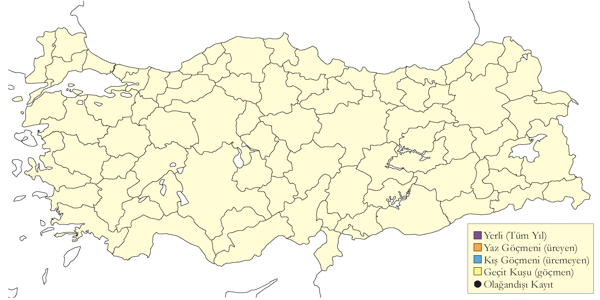
Üreme
Türkiye’de yuvalamaz.
Alttürler ve Sınıflandırma
Monotipik bir türdür.
Küçük Orman Kartalı
Clanga pomarina
Lesser Spotted Eagle
Lokal ve az sayıda yaz konuğu, yaygın ve çok sayıda bulunan geçit türüdür.
Üreme durumu ve yayılışı hakkında bilgi yoktur; genellikle su yakınlarında bulunan alçak düzlüklerle dağlık ormanlık arazileri tercih eden, az sayılarda görülen yerleşik bir yaz konuğudur. Alléon’un (1886) dediği gibi Belgrad Ormanı’nda ürediği üzere belki de eskiden daha da yaygın bir türdü. Komşu Bulgaristan’da Milchev’in 1988-1990 yıllarında yapmış olduğu araştırmada taradığı 5 kilometrekarelik alanın %42’lik kısmında ürediğine dair kanıtlar bulmuş, bu da türün bilinenden daha yaygın olduğunu göstermektedir.
Her ne kadar ülkenin üçte ikilik batı kısmında daha çok görülüyor olsa da türün daha yaygın ve görece sık görüldüğü zamanlar göç zamanlarıdır. Mart ortasından mayıs sonuna kadar olan bahar göçü esnasında sayıları daha azdır. 20 Nisan - 25 Mayıs 1993 tarihleri arasında Rize Fırtına Deresi ağzında 277 birey (Faldborg 1994), 3 Nisan 2002’de Alahan’da (Mersin) 600 birey kaydedilmiştir. İstanbul Boğazı’nda 1 Mart - 9 Nisan 1993 tarihleri arasında P. Dunes tarafından 17.326 kuş sayılmış, en yüksek günlük geçiş 27 Mart’ta kaydedilmiştir (Zalles ve Bildstein 2000). 2006 baharında 15.232 birey sayılmıştır (Üner vd. 2010). Ardından bu çalışmanın tekrarında 2010 yılında 15 Mart ile 31 Mayıs arasında toplam 18.988 kuş sayılmış ve ilkbahardaki en yüksek sayıyı oluşturmuştur (İKGT 2010).
Sonbahar göçünde ağustos ortasından ekim başına kadar görülürler, bazen de kasım ortasına kadar orta ve güney kesimlerde kalmış bazı bireyler kaydedilebilir. En yaygın oldukları yer İstanbul Boğazı ve Belen geçişidir. 1971 sonbaharında maksimum 18.984 birey kaydedilirken 5000’in katları halinde görülen bireyler kaydedilmiştir: 27 Eylül 2005 tarihinde Büyük Çamlıca’da kaydedilen 15.035 sayısı bugüne kadar kaydedilen en büyük rakamdır (İKGT), yine 26 Eylül 1990’da Avrupa Yakası’nda Sarıyer’de farklı gruplarca kaydedilen 11.379 (Robel ve Bräuning 1992) ve Asya yakasında Küçük Çamlıca’da 11.703 rakamları da oldukça önemli kayıtlardır. Bunlara ek olarak 9732 birey de 20 Eylül 1997 tarihinde Büyük Çamlıca’da sayılmıştır (Boyla ve Eken 1998). En yüksek sayımlar, 2008 yılında 5 gözlem noktasından 22 Eylül ile 10 Ekim arasında sayılan toplam 59.368 kuştur (Milvus Group). Bu sayı, bugüne kadar ülkede yapılan en yüksek sayım olup, İsrail dışındaki ülkeler arasında da en yüksektir (Shirihai vd. 2000).
Belen Geçidi’nde 1976 sonbaharında 1299 birey kaydedilmiş, bu sayımda bir günde geçen en yüksek sayı 13 Eylül tarihinde yapılan 513 bireylik kayda aittir (Sutherland ve Brooks 1981a), fakat 28 Eylül 2001’de sayılan 3424 bireylik kayıt aslında buradan geçen bireylerin muhtemelen çok daha fazla olduğuna işaret etmiştir. 18 Eylül - 13 Ekim 1994 tarihleri arasında Çukurova bölgesinde toplam 10.584 bireyin güneydoğu yönünde göç ettikleri görülmüş, bunlardan 6168 tanesi 2 Ekim tarihinde kaydedilmiştir. Buna karşılık Borçka’da 1976 yılında sonbahar toplamı 290 kuştur (Andrews vd. 1977). Orada kaydedilen en yüksek rakam ise 729 ile 1980 senesine aittir. Bunun yanında Çukurova Bölgesi’nde 26 ve 28 Eylül 2007’de toplam 34.760 kuş sayılmış olup bu bölge için en yüksek toplamdır.
Arada bir kış aylarında, genellikle Trakya bölgesinden kaydı mevcuttur; örneğin 24 Ocak 1993’te Meriç Deltası’nda bir, Ocak-Şubat 2001’de İğneada’da kaydedilen iki birey gibi. 2008 sonbaharında çok sayıda geç kalmış kuş da kaydedilmiştir, 9 Kasım’da bir kuş Kızılırmak Deltası’nda kaydedilmiştir (Sandgrouse 31: 100).
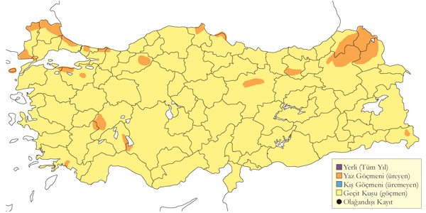
Üreme
Genellikle suya yakın bölgelerde bulunan alçak düzlüklerle ormanlık alanlarda ürerler. Erişkinler çiftler halinde ürediği tahmin edilen Karadeniz ve Marmara bölgelerinde görülseler de henüz bu bölgelerden kesin bir üreme kaydı yoktur. Başka yerlerde, yuva genellikle orman ve açık alanların kenarlarında bulunan ağaçlarda 6-25 metre yükseklikte, yuvası ortası çukur dal parçalarından oluşan, ot ve yapraklarla astarlanmış büyükçe bir yapıdır. Yumurta sayısı 1-3 olup ortalama 2’dir. MAR. 24 Nisan 1970 tarihinde İstanbul Belgrad Ormanı’nda 3 çiftin, 29 Haziran 1973’te başka bir çiftin kur davranışı yaptığı ve muhtemelen bir çiftin de kuluçka nöbeti değişimi gerçekleştirdiği gözlenmiş, fakat yuva bulunamamıştır. KAR. 1969 Temmuz sonunda Kızılırmak Deltası’nda iki bireyin ağaçlık bir alana her gün yiyecek taşıdığı görülmüş, fakat yine yuva tespit edilememiştir. Yine aynı yerde 27 Mayıs 1979’da türün kur davranışı yaptığı kaydedilmiştir (Dijksen & Kasparek, 1985). Yine bu deltada Yörükler Ormanı’nda 1992 yılında 4-5 çiftin ürediği tahmin edilmiş, fakat ne yuva bulunmuş ne de yiyecek taşıyan bireyler araştırmanın sona erdiği 10 Haziran tarihine kadar gözlenmiştir. Muhtemelen bu bölgede yumurtaların haziran ortasına kadar yuvaya bırakılmadığı tahmin edilmektedir (Hustings & Dijk, 1994). DOA. 12 Haziran 2005 tarihinde ise Çıldır ve Ardahan arasında bir erişkin bireyin yiyecek taşıdığı görülmüştür.
Alttürler ve Sınıflandırma
Monotipik bir türdür. Yeni yapılan genetik çalışmalarla küçük ve büyük orman kartalları Aquila cinsinden Clanga cinsine alınmıştır.
Büyük Orman Kartalı
Clanga clanga
Greater Spotted Eagle
Lokal ve az sayıda kış konuğu, yaygın ve az sayıda geçit türüdür.
Sulakalanlarda ekim sonundan mart sonuna, bazen de nisana kadar görülen kış konuğudur. Kızılırmak Deltası’nda az sayılarda, Göksu Deltası’nda son yıllarda 5-15’li sayılarda ve eskiden Antakya’da Amik Gölü (Kumerloeve 1967) ve Meriç Deltası’nda düzenli görüldüğü bilinmektedir.
İstanbul Boğazı ve Belen Geçidi’nde bahar göçü esnasında mart sonundan mayıs başına kadar az sayılarda düzenli şekilde görülürler. Sonbahar göçünde ise üç göç izleme noktasında ağustos ortasından kasım başına kadar göç eder, en yüksek sayılarda eylül sonu ekim başında geçer. Ankara “kış” kayıtlarının çoğunun şubat ortasıyla martın ilk haftası arası olması türün daha erken zamanlarda göç hareketine başladığını gösterir. 1963 Mart sonu Nisan başında D. Ristow Rize’nin kuzeydoğusunda küçük fakat belirgin bir grubun (9 birey) göç hareketini kaydetmiştir (Kumerloeve 1967). M. Henriksen 1994 yılında aynı yerde iki hafta içinde 7 bireyin görülmüş (Péske 1995), Hopa’da aynı dönemde 24 birey tespit edilmiştir. 1970 Mayıs ortasında ise Ağrı’nın kuzeyinde 7 birey gözlenmiştir. Herhangi bir üreme kaydına rastlanmasa da 1970’ler boyunca türün ülkenin kuzey ve kuzeydoğu bölgelerinin en uç kesimlerinden yaz kayıtları mevcuttur (Groh 1971). Açık renkli formu olan fulvescens donunun 2 Şubat 2008 tarihinde Terkos Gölü’nden bir kaydı mevcuttur.
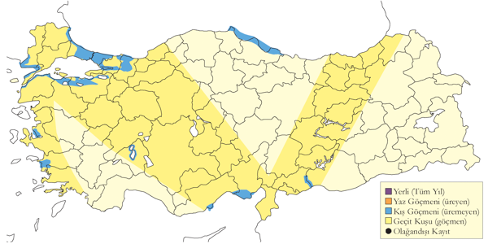
Üreme
Türkiye’de yuvalamaz.
Alttürler ve Sınıflandırma
Monotipik bir türdür. Yeni yapılan genetik çalışmalarla küçük ve büyük orman kartalları Aquila cinsinden Clanga cinsine alınmıştır.
Küçük Kartal
Hieraaetus pennatus
Booted Eagle
Yaygın ve nispeten çok sayıda bulunan yaz konuğu ve geçit türüdür.
Her ne kadar 2500 metre üzerinden birkaç kaydı olsa da özellikle ağaçlarla kaplı dağlık arazilerde ürer, fakat daha açık, kurak bölgelerde de ürediği görülür. Göç sırasında İstanbul Boğazı, Belen Geçidi ve Çoruh Vadisi’nde düzenli olarak önemli sayılarda görülür. Kışın 1 Ocak 2008 tarihinde İstanbul Belgrad Ormanı’nda kaydedilmiştir.
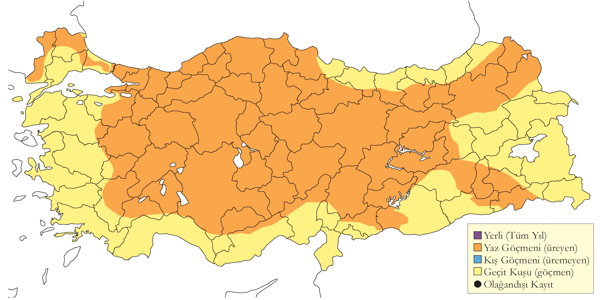
Üreme
Ağaçlarla kaplı tepelik ve dağlık alanlarda, bazen de oldukça kurak bölgelerde ürer. KAR. Çatalağzı (Zonguldak) yakınlarında oldukça sık bir ormanda görülen yuvanın yerden 6,2 metre yükseklikte olduğu, yaklaşık 1,3 metre çapa sahip dallardan yapılmış bu yuvada mayıs başında bırakılmış iki yumurta kaydedilmiştir (Ogilvie 1954). AKD. Aladağlar’da 5 Mayıs 1876’da henüz içinde yumurta olmayan, taze yapraklarla astarlanmış (diğer yerlerde de bu şekilde) titrek kavak ağacı üzerine yapılmış bir yuva görülmüştür (Danford 1878). 24 Temmuz 1971’de Pozantı (Adana) yakınlarında iki erişkin ve iki genç birey beraber gözlenmiştir. İÇA. 23 Haziran 1983’te Kızılcahamam’da bir tepenin sırtında, büyük olasılıkla bir ağaca yapılmış başka bir yuva kaydedilmiştir (Barış vd. 1984). 29 Mayıs 1999’da Yalvaç’ta (Isparta) bir geçitte koyu renkli iki bireyin çiftleştiği gözlenmiştir. MAR. 21 Nisan 1996’da İstanbul yakınlarında Kemerburgaz’da iki erişkin bireyin (biri koyu, diğeri açık renkli). EGE. 4 Mayıs 1996’da Akdağ Dağı’nda (Denizli) da başka 10 bireyin (Heredia vd. 1997) kur davranışı sergiledikleri kaydedilmiştir.
Alttürler ve Sınıflandırma
Monotipik bir türdür.
Bozkır Kartalı
Aquila nipalensis
Steppe Eagle
Çok lokal ve nadir yaz konuğu, nispeten yaygın ve seyrek geçit türüdür.
1980lere kadar İç Anadolu’da en azından bir üreme noktasında, daha sonra da yine aynı bölgede farklı yerlerde keşfedilen iki yeni üreme noktasında ürediği bilinmektedir. En yeni üreme kayıtları genç bireylere ait olsa da üreme dönemi esnasında erişkinlerin en yoğun kaydedildiği çalışma 1998 yazında Konya havzasında yapılan kapsamlı bir çalışmaya aittir (Eken ve Magnin 1999, Kirwan vd. 2003). Temmuz 1999’da Ağrı ilinde Malazgirt’te bir erişkin birey, Temmuz 2001’de Hafik yakınlarında bir birey (Bilgin ve Demirci 2002 makalesinde M. Panayotapoulou) Temmuz 2006’da başka erişkin bir birey de Tendürek dağında kaydedilmiştir.
1960ların ikinci yarısına kadar bu türün tüm kayıtları esasen şüpheyle karşılanmıştır. Fakat daha sonra türün göç dönemleri olan ilkbahar ve sonbahar aylarında az sayılarda başta ülkenin doğu kesimleri olmak üzere düzenli olarak göç ettiği kabul edilmiştir. Türün göçü ilkbaharda nisan başından mayıs ortasına, sonbaharda ağustostan ekim sonuna kadar devam eder. 11-25 Ekim 1977 tarihlerinde Borçka’da muhtemelen çoğu geç göç yapan bireylerden oluşan toplam 434 birey sayılırken (Beaman 1977), 1976 sonbaharında 271 birey kaydedilmiştir (Andrews vd. 1977). Trakya, Akdeniz bölgesi ve İç Anadolu’dan toplam 5 kış kaydı mevcuttur.
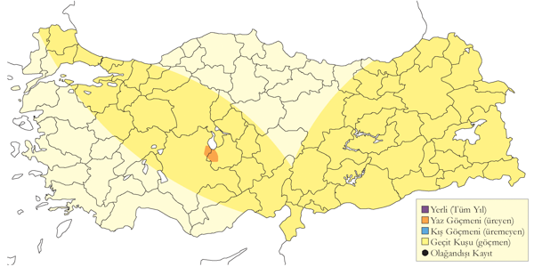
Üreme
İÇA. Bulunan iki yuvanın detayları Lehmann (1977) tarafından sunulmuştur. Pforr ve Limbrunner (1982) makalesinde yayınlanan fotoğraf iki yuvanın ot, tüy ve döküntülerle astarlandığını göstermektedir. Bu kayıtlar daha sonra, tıpkı Türkiye’de üreyen tüm bozkır kartalı kayıtları gibi, şah kartalı olarak değerlendirilmiştir. Fakat fotoğraflar yeniden incelendiğinde bu kayıtların hepsinde yavruların tüyleri, yuvanın yeri ve yuva yapımında kullanılan döküntünün niteliği bu yuvaların aslında bozkır kartalı yuvaları olduğunu göstermiştir. Tuz Gölü’nde uzak bir adanın yamaçlarında yere yuva yaptığı kaydedilmiştir. Yuva 1969 senesinde kullanılmış, 1970 senesinde ise kullanılmamıştır (Warncke 1971); muhtemelen 10 Nisan civarında yumurtaların bırakıldığı yuvada yaklaşık 10 günlük iki yavru 31 Mayıs 1971’de, muhtemelen yumurtaların mart sonu nisan başı gibi bırakıldığı yine aynı yuvada yaklaşık 4 haftalık bir yavru 10 Haziran 1973 tarihinde görülmüştür. Bu eski yuva 9 Mayıs 1993 tarihinde halen bozulmamış halde olup kullanılmamaktaydı. Lehmann’ın (1977) detaylarını ve fotoğraflarını sunduğu ve 1972 ve Mayıs 1975 başlarında yaptığı ziyaretler esnasında keşfettiği yuva büyük ihtimalle bu yuva ve elde ettiği bilgiler de yuvanın bozkır kartalına ait olduğunu destekliyor. Bolluk Gölü’nde sığ düz bir adanın üzerinde yerde bir yuva kaydedilmiş, mart ortasında yumurtaların bırakıldığı tahmin edilen bu yuvada 6 Mayıs 1975’de yaklaşık bir haftalık bir yavru ile bir yumurta görülmüştür (Pforr ve Limbrunner 1982). Bu yuva her kadar 1980 yılında kullanılmış olsa da 1993 Mayıs başında kullanıldığına dair bir kanıt bulunamamıştır. Türün ürediğini gösteren en yeni kayıt 11 Haziran 2003 tarihinde Seyfe Gölü’nde yerde ve fotoğraflarla belgelenmiş yuva olup bu yuvada tüylü üç yavru kaydedilmiştir.
Alttürler ve Sınıflandırma
Türkiye’de muhtemelen orientalis alttürü bulunsa da ((Roselaar, 1995)) henüz bir tahnit örneğinin incelemesi yapılamamıştır.
Şah Kartal
Aquila heliaca
Eastern Imperial Eagle
Lokal ve yer yer çok sayıda bulunan yerli ve yarı göçmen, nispeten yaygın ve seyrek geçit türü ve kış konuğudur.
Mart sonundan itibaren, tür özellikle ormanlık alçak arazilerle hem ibre yapraklı hem de yaprak döken dağlık alanlarda yaklaşık 2000 metreye kadar ürer. Nadiren de ağaçsız açıklık arazilerde yuva yapar. Son yıllarda yapılan kapsamlı araştırmalarda Trakya’da 20-25 çiftin ve Bolu Gerede’de 15 çiftin yuvaladığı ve bu iki alanın yoğunlaştığı iki ana üreme bölgesi olduğu tespit edilmiştir. Ankara yakınındaki Beynam Ormanı türün düzenli ürediği alanlardandır. Elimizdeki mevcut kanıtlar 1960’lardan itibaren popülasyonunun, başta Ege ve Akdeniz bölgelerinde ciddi şekilde azaldığını göstermektedir. Kumerloeve (1961, 1967, 1970), şu an çoğunun kullanılmadığını bildiğimiz, türün zamanında ürediği bilinen ya da şüphe edilen üreme alanlarının kapsamlı bir listesini yapmıştır. Acar vd. (1977) Türkiye’de 50-99 çift şah kartal olduğunu söylerken De Roeck (1993) Türkiye için 50-150 çiftlik bir popülasyon olduğunu iddia etmiştir. Türkiye popülasyonunun bu iki önermeden daha yüksek olduğu söylenebilir.
Ana göç izleme noktalarında mart başından itibaren görülmeye başlar. Göç noktalarındaki en yüksek kayıt 30 Mart ve 24 Mayıs 2006 arasında İstanbul Boğazı’nda kaydedilen toplam 32 kuştur (Üner vd. 2010, Sandgrouse 32: 20-33). Bu çalışmanın 2010 yılındaki tekrarında 15 Mart ve 31 Mayıs arasında toplam 27 kuş sayılmıştır (İKGT 2010). Hopa’da1994 ilkbaharında 20 birey kaydedilmiş, fakat daha sonra burada kaydedilen 69 bireyin Şah Kartal mı, yoksa bozkır kartalı mı olduğu anlaşılamamıştır. Sonbaharda türün en çok kaydedildiği günler 1966’da İstanbul Boğazı’nda 18 ve Borçka’da 1977’de 29 bireyin sayıldığı günler olup (Beaman 1977), İstanbul Boğazı ve Borçka’da da ağustos ortasından kasım sonuna kadar göç eder. Göçün en yoğun olduğu zamanlar eylül sonundan ekim ortasına kadar olan süredir. Daha çok batı, güney ve iç bölgelerde olmak üzere kış aylarında kısmen daha yaygındır. Bu alanlarda daha çok kıyı bölgelerde ya da sulakalanlarda görülür, örneğin 1991/2 yılından Göksu Deltası’nda 5 birey kaydedilmiştir (van der Berk ve Güder 1992).
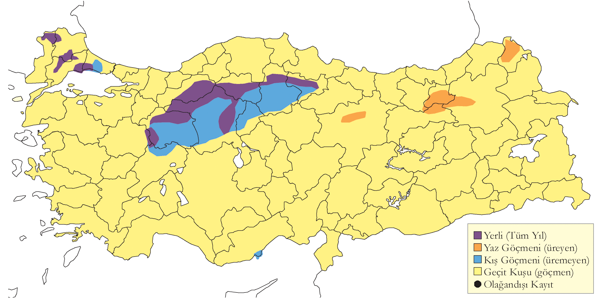
Üreme
Açık ormanlık arazilerde, izole orman parçalarında, dağınık ya da tek kalmış ağaçlarla ürer. Ankara yakınlarında Beynam Ormanı’nda iki çift izole karaçam ve meşe ormancığında üremiştir. Bolu yakınlarında 1000 metrenin üzerindeki bir platoda bataklığın hemen yanında birkaç ağaçtan oluşan karaçam topluluğunda (Wirth 1996) ve İç Anadolu bozkırlarında yalnız kalmış birkaç ağaçta (aşağıda bkz. Danford) üremiştir. Genellikle kavak, söğüt ve çam gibi türlerin yaşlı ve yüksek olanlarında, bazen de yarlarda yuva yapar. Yuvası her yıl yenilenen ot, çubuk ve yeşil yapraklarla astarlanmış ortası kısmen çukur dal ve çubuklardan oluşan büyükçe bir yapıdır. Genellikle bir bölgede 2-3 yuva vardır, bu yuvalar farklı yıllarda kullanılır, yuvalara her sene yeni malzeme getirildiğinden yuvaların boyutu gittikçe büyür. Türkiye’de gözlenen yumurta sayısı 1 (4 yuvada), 2 (2 yuvada), 3 (2 yuvada). Yavru sayısı: 1. En büyük yavru hayatta kalır ve daha büyük tek yavrulu yuvalarda bu yüzden genelde hep bir yavru olur. İÇA. Danford (1880) 1876 ve 1879 yıllarında birçok yuva bulmuştur: Aladağlar (Niğde) ve Kayseri arasındaki bölgede bulunan birçok söğüt ve diğer tür ağaçlardan birçok yuvayı almıştır. Üreme dönemi farklıdır, çünkü 1876 yılında yeni bırakılan yumurtalar, kuluçkaya yatılmış yumurtalar ve yavruların hepsi mayısın ikinci haftasında görülmüştür; 8 Mayıs 1876’da Kayseri yakınlarında bulunan bir yamaçta, içinde iki yavru bulunan yuvadan bir erişkin bireyin fırlayıp uçtuğu kaydedilmiştir (Danford 1877-78). Yukarıda bahsedilen bu üç yuvadan 9 Mayıs 1876 tarihinde toplanan üç yumurta bugün Tring Doğa Tarihi Müzesi’ndedir. 1879 Mart’ın ikinci yarısında Kayseri yakınlarındaki bir yuvadan üç yumurta ve Ankara Köprüköy civarında bulunan bir yuvadan da “oldukça desenli” iki yumurta 1879 Martının sonunda toplanmıştır. Bu Köprüköy civarındaki yuvanın alt kısmında kerkenez, ev serçesi ve söğüt serçesinin yuva yaptığı görülmüştür. Danford (1880) can sıkıcı bulduğu Ankara bölgesinde bulunan, birbirinden uzak ve izole ağaç kümelerinin şah kartal yuvalarının çoğuna adeta sahip çıktığını söylemektedir. Ankara’nın güneyinde Beynam’da 1968 Ağustos’ta 3 genç birey görülmüş; 12 Temmuz 1971’de 1400 metre yükseklikte bir çam ağacında içinde oldukça büyümüş bir yavrunun olduğu bir yuva kaydedilmiş; 1995’te yine aynı yerde iki çiftin bir yavru büyüttüğü, yuvalarda da iki yavrunun bulunduğu görülmüştür (Wirth 1996). Nisan başında yumurtaların bırakıldığı bir yuvada 5 Haziran 2002’de içinde yaklaşık 3 haftalık bir yavrunun bulunduğu bir yuva kaydedilmiştir. 1966 yılında Ankara yakınlarında bir çift 2-3 yavru, 1968’de Yozgat’ta başka bir çift iki yavru büyütmüş, 5 Mart 1971’de Yozgat’ta başka bir yuva bulunmuştur. KAR. 6 Haziran 1970’te Samsun Havza yakınlarındaki yamaçlarda bulunan bir yuvada iki yavru, 24 Temmuz 1972’de Kızılırmak Deltası’ndaki bir ağaçta bulunan yuvada ise iki erişkin birey kaydedilmiştir. Haziran 1986’da Gümüşhane’de bulunan bir yuvada en az bir yavru görülmüştür. 1 Temmuz 1989’da Bolu’nun doğusunda yarım kilometrekare büyüklüğünde izole bir ormanda bulunan bir karaçamın yerden yaklaşık 20 metre yükseklikte büyük bir yuvada tamamen tüylenmiş bir yavru tespit edilmiştir (Wirth 1996). 6 Haziran 2005’te Gümüşhane Bayburt yolu üzerinde bir direk üzerinde bulunan yuvada tüylenmiş iki yavru kaydedilmiştir. MAR. 22 Nisan 1965’te Meriç Deltası’ndaki bir kavak ağacında yerden 10 metre yükseklikteki yuvada bir dişi bireyin kuluçkaya yattığı (Warncke 1964-65); 29 Haziran 1973’te Uluabat Gölü’nde bir genç birey; 29 Mayıs 1993’te Kocaçay Deltası’nda muhtemelen çevredeki tepelerde ürediği düşünülen bir erişkin bireyin yiyecek taşıdığı gözlenmiştir (Ertan 1996). EGE. Bugün Tring’de olan 5 yumurtanın üçü 15 Nisan 1872’de, diğeri Nisan 1873’te ve sonuncusu ise Nisan 1874’te Krüper tarafından İzmir çevresinden toplanmıştır. 1873 ve 1874’te toplanan birer yumurta muhtemelen henüz tamamlanmamış kuluçkalara aittir.
Alttürler ve Sınıflandırma
Monotipik bir türdür.
Kaya Kartalı
Aquila chrysaetos
Golden Eagle
Yaygın ve nispeten çok sayıda bulunan yerlidir.
Genellikle 1500 metre üzerinde ürer. Bazen üreme dönemi dışında alçak rakımlarda da kaydına rastlanır. Trakya’da Mayıs sonu gibi oldukça geç bir dönemde kaydedilmiş olması yakınlarda ürediğine işaret eder. Nitekim Marmara Adası, Kapıdağ Yarımadası ve Kocaçay Deltası güneyindeki dağlarda ürediği bilinmektedir.
Düzensiz bir şekilde İstanbul Boğazı (Alléon ve Vian 1869, 1870, Reiser 1904, OST 1975) ve Borçka’da (Andrews vd. 1977, Beaman 1977) eylül ortasından ekim sonuna kadar görülürler. Göç izleme noktası Borçka’dan ağustos başı (Ballance ve Lee 1961) ve şubat sonunda kayıtları mevcuttur.
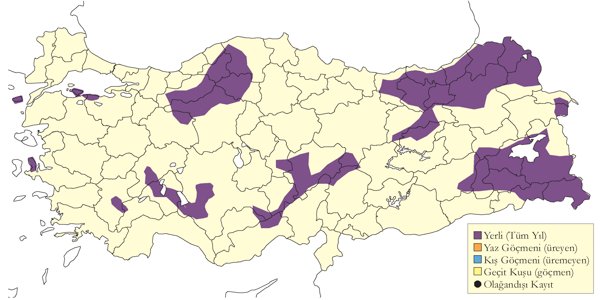
Üreme
Yarların, çatlakların, kaya çıkıntılarının ve büyük ağaçların bulunduğu dağlarda ürer. Yarların çıkıntılarında, genellikle küçük bir arada ya da kaya saçağının altında veya ağaçlarda yuva yapar. Aynı yar uzantısında bulunan birkaç yuva değişimli olarak farklı senelerde kullanılır. Yuva dallardan yapılmış, yeniden kullanıldıkça ek malzeme yüzünden daha da büyüyen büyükçe bir yapıdır. İç Anadolu’da bulunan bir yuvanın çam pürüyle (Pforr ve Limbrunner 1982), Akdeniz Bölgesi’nde başka bir yuvanın ise yeşil köknar dallarıyla (Danford 1877-78) astarlanmış olduğu görülmüştür. Türkiye’de gözlenen yumurta sayısı 2 (5 yuvada) Yavru sayısı: 1 (3 yuvada), 2 (1 yuvada). Başka yerlerde genç olan yavru ilk haftalarda ölür ya da daha büyük olan tarafından öldürülür, böylelikle bir yavru hayatta kalır. İÇA. İç Anadolu’da 27 Mayıs 1975’te Kızılcahamam’da içinde iki yumurta bulunan bir yuva ile 1 Nisan civarında yumurtaların bırakıldığı, 31 Mayıs 1973’te içinde iki haftalık iki yavrunun bulunduğu diğer bir yuva kaydedilmiştir (Pforr ve Limbrunner 1982). 8 Mayıs 1965’te Palas gölü yakınlarında bir ağaçta yerden 30 metre yükseklikle başka bir yuvada iki yumurta (Warncke 1964-1965); 16 Haziran 1986’da Kızılcahamam yakınlarında iki erişkin ve genç bir birey ve 13 Haziran 1998’de Şereflikoçhisar yakınlarda bir yuvada erişkin bir bireyin iki yavruyu beslediği tespit edilmiştir. AKD. Demirkazık’ta 15 Nisan 1996’da kur yapan iki birey, 27-28 Mayıs 2000’de bir kaya çatlağına yapılmış yuvada oturan bir yavru ve başka bir kaya çatlağına yapılmış bir yuvaya uçan iki birey 1993 Haziranın başında kaydedilmiştir. 3 Haziran 1999’da en az bir yavrunun bulunduğu, bu yuvaya erişkin bireylerden birinin taze yeşil yuva malzemesi diğerinin ise bir yılan taşıdığı görülmüştür. Danford, 1876 ve 1879 yıllarında yaptığı araştırmalarda bu bölgede çok sayıda yuva bulmuştur; 9 Mart 1879’da Toros Dağları’nda birçok yuva ziyaret etmiş, fakat hiçbir yuvada henüz yumurtaların bırakılmadığını görmüştür (Danford 1880); Mart ortasında yumurtaların bırakıldığı Aladağlar’da bir yuvada 30 Nisan 1876 tarihinde çok küçük bir yavru ile sarısı olmayan bir yumurta bulmuştur (Danford 1877-1878). 30 Mart 1876’da Bolkar Dağları’ndaki bir yuvadan “hoş desenli” iki yumurta toplamış, bulduğu diğer yumurtaların hiç de desenli olmadıklarından, hatta neredeyse bembeyaz desensiz olduklarından şikâyet edip sonrasında kendince güzel bulduğu renkli yumurtaları 1879 Nisan ayının ilk yarısında bu bölgeden toplamıştır. Mut’un (İçel) güneyinde dev bir yarın nehre bakan çatlağında bulunan bir yuvada 15 Mayıs 2004 tarihinde yaklaşık 3-4 haftalık bir yavru kaydedilmiştir. KAR. İspir’de nisan-mayıs aylarında kur davranışı izlenmiş, 12-14 Haziran 1975 yiyecek taşıyan bir erişkin birey görülmüş, 4-5 Temmuz 1988’de de uçurumda oturan iki erişkin ve bir genç birey gözlenmiştir. MAR. 1 Mayıs 1993’te Kocaçay Deltası’nda (Bursa) bir çiftin kur davranışı yaptığı kaydedilmiştir (Ertan 1996). DOA. 14 Haziran 1973’te Horasan’da içinde bir yavru olan bir yuva, 15 Ağustos 1972’de Pasinler’in doğusunda yine içinde bir yavru olan başka bir yuva tespit edilmiştir. 21-22 Haziran 1994 tarihinde çoktan tüylenmiş yavrular gözlenebilirken ikinci yuvadaki yavrunun görüldüğü 15 Ağustos tarihi yuvada yavru görmek için oldukça geç bir tarihtir. 31 Mayıs 1969 tarihinde Görentaş’ın batısındaki dağlarda uyarı çığlıklar atan bir çift ise bölgede türün ürediğini göstermektedir. Kaya kartalları ve diğer pek çok yırtıcı kuş, yuvalama dönemi boyunca yeşil taze malzemeler getirerek yuvalarını yenilerler ya da durmadan yuvaya ek yuva malzemesi taşıyarak yuvalarını büyütürler. 12-14 Haziran 1975’te İspir’de, 31 Mayıs 1991 Demirkazık’ta yuvaya malzeme taşırken görülen bireyler bu kapsamda değerlendirilmelidir, çünkü gözlem tarihleri yuva yapımı iddiasında bulunmak için oldukça geçtir.
Alttürler ve Sınıflandırma
Kış aylarında Trakya’da görülen bireyler belirgin bir şekilde nominat tür olarak tanımlanırken, Anadolu’da olanlar homeyeri alttürüdür ((Roselaar, 1995)).
Tavşancıl
Aquila fasciata
Bonelli’s Eagle
Lokal ve az sayıda yerlidir.
Üreme ve yayılış durumu kısmen bilinmektedir. Genellikle 1500 metre aşağısındaki yüksekliklerde görülürler. Tucker ve Heath (1994) Türkiye’deki üreyen popülasyonunun 100 çift civarında olduğunu söylerken, Kasparek (1992a) bu sayının yaklaşık 50 çift civarında olabileceğini hesaplamıştır. Karadeniz kıyılarının doğu yarısı, İç Anadolu ve Doğu Anadolu’dan üreme dönemlerinde elde edilmiş kayıtların tümü başta genç bireyler olmak üzere başıboş bireylere aittir. Modern kayıtlardan (1966) önceki kayıtların çoğunun genç arı şahinleriyle P. apivorus karıştırılmış olduğu görülür. En azından bazı yayınlanmış kayıtlar kesinlikle hatalı tanımlamalar sonucunda yapılmıştır. Örneğin günümüzde, türü çok seyrek gördüğümüz Boğaziçi’nde Mathey-Dupraz (1921) ve Braun (1904) türün oldukça yaygın olduğunu yazmışlardır. 1980’den beri elde edilen kayıtların tamamı, ki sekizi tek başına 1994 senesine aittir, eylül sonu ve ekim başı arasındaki dönemde Borçka-Hopa bölgesinden elde edilmiştir (Kok ve Onengae 1995, Mrlik vd. 1995).
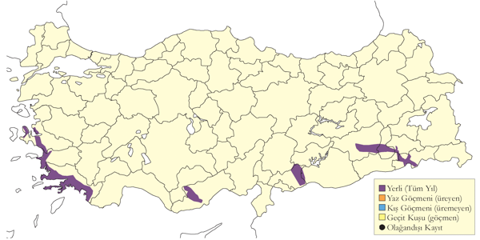
Üreme
Yüksek yarlarda, kaya çıkıntıları, çatlakları ve nehirlere bakan uçurumlarda ürer. Uçurumların çıkıntılarında ya da oyuklarında yuva yapar. Yuvası yapraklı dallarla astarlanmış, çöplerden yapılmış büyükçe bir yapıdır. Yuvalar takip eden yıllarda yeniden kullanılabilir, bu yüzden her geçen yıl ebatları daha da büyür. Farklı yuvalar yıllar içinde dönüşümlü olarak kullanılabilir ve bir tek kayalık yamaçta 3-4 yuva bulunabilir. GDA. Danford (1880) Birecik bölgesinde yuvalar bulmuş ve 14 Şubat 1879’da türün tüm yuvalarda kuluçkaya yattığını görmüştür. Birecik’te kurak bir vadinin yamaçlarında dallardan yapılmış bir yuvanın mavi bir plastik poşetle astarlandığı görülmüş, 10 Mayıs 2004 tarihinde yaklaşık 2 haftalık iki yavrunun da içinde olduğu belirlenmiştir. Muhtemelen bu yuvadaki yumurtalar, diğer birçok kaydın gösterdiği tarihlerden daha geç bir zamanda, mart ortasında bırakılmıştır. Aşağıdaki kayıtlar Kılıç vd. (2003) makalesinde yayınlanmış kayıtlardır: Hasankeyf yakınlarında Dicle nehrine bakan dik yamaçlarda bulunan bir oyukta, nehir seviyesinden 42 metre yukarıda, uçurumun tepe noktasından 10 metre aşağıda yaklaşık 1 metre çapında dallardan yapılmış bir yuva bulunmuştur; muhtemelen önceki yıllardan kalma 4 yuva daha yakınlarında kaydedilmiştir. Bu yuvada 25 Nisan 2003’te, 16 Mayıs 2003 tarihinde erişkin boyutlarına gelmiş 30-35 günlük bir yavru belirlenmiş, 23 Mayıs 2003 tarihinde de bu yavru yuvadan uçmuştur. Muhtemelen bu yuvaya yumurta 10 Şubat civarında bırakılmıştır. 21 Nisan’dan haziran başına kadar Halfeti’deki çok iyi bilinen üreme noktasından birçok üreme kaydı mevcuttur. Şubat ortası gibi yumurtaların bırakıldığı Kilis’in batısındaki bir yuvada yaklaşık 10 günlük iki yavru 7 Nisan 1971 tarihinde kaydedilmiştir. 16 Haziran 1983’te ise Cizre ve Eruh arasında iki erişkin ve iki genç bireyden oluşan bir aile tespit edilmiştir.
Alttürler ve Sınıflandırma
Türkiye’de nominat alttürü bulunur. Bulunan genetik kanıtlar Hieraaetus cinsinden Aquila cinsi altına taşınması gerektiğini söylemektedir (Wink vd. 2004).
Şikra
Accipiter badius
Shikra
Rastlantısal konuktur.
İki kez kaydedilmiştir. İlk kez 1 Eylül 2006’da Hopa’nın 4 km doğusunda bir atmacacının ağına genç bir kuş takılmış, türün tayini ayrıntılı fotoğraf üzerinden yapılmıştır (Smith 2012). İkinci kez bir genç Aras Halkalama İstasyonu’nda 30 Ağustos 2012’te yakalanmıştır. Türün Ermenistan’da Erivan bahçelerinde ürediği ispatlanmıştır (Vasilis 2013).
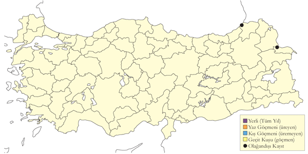
Üreme
Türkiye’de yuvalamaz.
Alttürler ve Sınıflandırma
Türkiye’deki alttür, Kafkaslar’da bulunduğu bilinen cenchroides alttürü olması beklenir.
Yaz Atmacası
Accipiter brevipes
Levant Sparrowhawk
Lokal ve seyrek yaz konuğu, nispeten yaygın ve yer yer çok sayıda bulunan geçit türüdür.
Marmara, Karadeniz Bölgesi ve İç Anadolu’da Aksaray Hasan Dağı’nda yuvaladığı ispatlanmış olup, Ege ve Güneydoğu Anadolu’daki yaprak döken ormanlarda ürediğinden de ciddi şekilde şüphelenilmektedir. Üreme mevsiminde Doğu Anadolu’da uygun habitatların bulunduğu en az 5 yerde yeni kayıtları mevcuttur. Komşu Bulgaristan’da Milchev (1994) 1988-1990 yılları arasında araştırılan 5 kilometrekarelik alanın sadece %2’lik kısmında türün ürediğine dair veri elde etmiştir.
Özellikle ülkenin üçte ikilik batı kısmında görece olarak göç dönemlerinde daha az yaygındır; İlkbaharda nisan başından mayıs ortasına kadar görülürken, sonbaharda temmuz sonundan, ama genelde ağustos sonundan ekim başına kadar türün göçü devam ediyor, sonbaharda en yükse sayılar eylül ayının ikinci yarısında görülüyor. Bazı daha erken kayıtlar kesinlikle atmacayla A. nisus karıştırıldığını gösteriyor. Tür İstanbul Boğazı’nda 1971 yılında toplam 5707, sadece 15 Eylül’de 2243 tane sayılmış, 1978 yılında toplam 6516 sayılmış, en yüksek günlük toplam 18 Eylül’de kaydedilmiştir.
1976 sonbaharında Belen’de 2951 birey kaydedilmiştir (Sutherland ve Brooks 1981a). Bunun yanında yine Belen’de bir günde 1062 bireyin geçtiği toplam 1914 birey 16-18 Eylül 1991 tarihlerinde görülmüştür. Kasparek (1992a) her ne kadar yıl ve tarih belirtmemiş olsa da İstanbul Boğazı’nda sonbaharda gözlemlenen 7750 bireyden (tek günde 6625 birey sayılmış) bahseder. Detaylı verinin olduğu tek yıl olan 1976’da, Borçka’dan toplam 290 bireylik bir kayıt vardır (Andrews vd. 1977). 1993 ilkbaharında 29 Nisan ve 25 Mayıs tarihleri arasında Faldborg (1994) Rize’de Fırtına Deresi ağzında toplam 1945 birey saymış ve sadece 30 Nisan’da 1286 tane kaydedilmiştir. 1994’ün ilkbaharında Artvin Hopa’da toplam 1092 ve sadece 2 Mayıs’ta 797 birey sayılmıştır. 1995 ilkbaharında Peske (1995) aynı bölgede iki hafta içinde 1163 birey kaydetmiştir, bu da göstermektedir ki, daha önce tahmin edilenin aksine bu mevsimlerde bu bölgeden çok daha fazla birey göç ediyor olabilir.
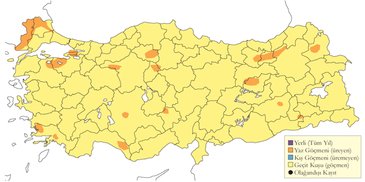
Üreme
Hem yaprak döken hem de ibreli ormanlarda ürer. Türkiye’de yuvanın tanımı yapılmamıştır, Pforr ve Limbrunner (1992) makalesindeki fotoğraflar Yunanistan’da çekilmiştir; fotoğraflarda 23 Mayıs 1978’de içinde 5 yumurta ve 6 Temmuz 1977’de yaklaşık iki haftalık yavrular görünmektedir, muhtemelen ikinci yuvada yumurtalar mayıs ortasında bırakılmıştır: Yuvalar görece daha küçük, yeşil yapraklarla astarlamış, yaklaşık yerden 5 metre yüksekliğe daldan yapılmış yapılardır. Tring Doğa Tarihi Müzesi’nde bulunan 28 Mayıs 1963’te alınan bir yumurta, 1 Haziran 1871’de çam ağacından bulunan bir yuvadaki 3 yumurtalık bir kuluçkadan alınan bir yumurta ve 18 Mayıs 1872’de alınan 2 yumurta Krüper tarafından İzmir’in iç taraflarından toplanmıştır. Daha sonra 25 Mayıs 1870, 28 Mayıs 1901 ve 19 Mayıs 1907 tarihlerinde 3 defa, bir yuvadan 4 ve iki yuvadan 3 yumurta daha Türkiye’den yumurta toplanmıştır. MAR. Muhtemelen çevrede üremiş olan bir çift, havada taklalar atıp bağrışarak oynayan 4 yavrusuyla 20 Ağustos 1979 tarihinde Çamlıca’da kaydedilmiştir (Beaman 1986; R. F. Porter). 3 Ağustos 1978’de uygun üreme habitatında erişkin bireyler görülmüş ve 27 Haziran 2000’de Edirne’de tüyleri yeni çıkmış bir yavrusuyla bir çift fotoğraflanmıştır (Kirwan vd. 2003). 7 Haziran 1984’te Ayvacık’ta (Çanakkale) kur davranışı gözlenmiştir. EGE. (McNeile, 1950, 1951, 1954, 1967, 1968, 1970, 1972, 1973), İzmir yakınlarında büyük bir meşe ağacının tepesinde bir yuva bulmuş, daha önce bir çiftin ürediği bu yuva daha sonra 25 Mayıs 1950’de boş bulunmuştur. DOA. 2 Ağustos 1990’da İspir (Erzurum) yakınlarındaki meyve bahçelerinde görülen bir çift muhtemelen üremiştir. 2004’te belirgin bir üreme davranışı görülmüş, daha sonra 20 Mayıs 1995’te aynı yerde yumurtaları ya da yavrularıyla yuvada bulunan bir dişi keşfedilmiştir. GDA. 14 Temmuz 1990’da Uludere yakınlarında türün kur davranışı yaptığı gözlemlenmiştir. AKD. 15 Haziran 1988’de Taşağıl’da (Antakya) yarlardan oluşan bir bayırın aşağısındaki sık çam ağaçları içinde bir yuvada bulunan bir çift görülmüştür ((Kirwan & Martins, 1994)). 23-26 Mayıs 2007 tarihinde Manavgat yakınlarında tarım arazileriyle çevrili bir çamlık alanda iki yuva kaydedilmiş, bu yuvalardan biri yerden 15 m yükseklikte içinde erişkin bireyin kuluçkada oturduğu görülmüş, 13 metre yükseklikteki diğer yuvadan da bir erişkin bireyin uçtuğu ve yuvayı astarlayan yeşil dallar tarafından lekelenmiş 3 yumurta bu yuvada kaydedilmiştir. 15 Mayıs 2001 tarihinde ise Köyceğiz’de türün kur davranışı yaptığı gözlenmiştir (Kirwan vd. 2003).
Alttürler ve Sınıflandırma
Monotipik bir türdür.
Atmaca
Accipiter nisus
Eurasian Sparrowhawk
Nispeten yaygın ve nispeten çok sayıda bulunan yerli ve yarı göçmen, yaygın ve çok sayıda bulunan geçit türü ve kış göçmenidir.
Koruluk ve ormanlık alanlarda az sayılarda görülürler. Komşu Bulgaristan’da Milchev’in (1994) yaptığı sayımlarda araştırılan alanın sadece %7’lik kısmında rastlanmıştır (bkz. çakır A. gentilis) İç Anadolu ve Karadeniz Bölgesi’nde bulunan yoğunlukları oldukça azdır ve Türkiye’deki, üreme, yayılış ve davranışlarıyla ilgili yeterli veri elimizde yoktur.
Göç zamanlarında tüm ülkede yaygın ve sık görülür, ilk ve sonbahar aylarında Belen Geçidi’nde daha az sayılarda gözlemlenir. 21 Mart ve 14 Mayıs 1994 tarihleri arasında Hopa’da 3966 birey, 21 Nisan - 5 Mayıs 1995’te yine aynı yerde 1730 birey kaydedilmiş (Péske 1995), 8 Nisan - 25 Mayıs 1993 tarihleri arasında Rize Fırtına Deresi ağzında 695 bireyle Kızılırmak Deltası’nda 14 Nisan - 21 Mayıs 1992 tarihlerinde 186 birey kaydedilmiştir (Hustings & Dijk, 1994). İstanbul Boğazı’nda ise ilkbaharda mart ortasından mayıs sonuna kadar geçer ve en yoğun geçiş mart sonudur ki kuzey bölgelerindeki gözlemler bu tespiti doğrular. İlkbaharda en çok bireyin sayıldığı zamanlar 1993 ilkbaharında 994 (195 tanesi Nisan 2005’te sadece iki gün içinde sayıldı) ve 2006 baharında 1701 bireyken sonbaharda en çok sayıldı günde 428 bireye ulaşıldı. 2010 yılında İstanbul Boğazı’ndan geçen en yüksek sayı kaydedilmiş, 15 Mart ve 31 Mayıs arasında toplam 3477 kuş kaydedilerek geçen yılların iki katı bir toplam elde edilmiştir (İKGT 2010).
Sonbaharda ağustos sonundan ekim ortasına kadar geçiş yapar ve en yoğun geçiş eylül ayında görülmektedir. Borçka’da da ağustos ortasından ekim sonuna kadar yaygın şekilde görülür. 17 Ağustos ile 10 Ekim 1976 tarihleri arasında Borçka’da 688 birey sayılırken (Andrews vd. 1977) göç eden bireylerin çoğunun geç sonbahar geçtiğini gösterir şekilde 11-25 Ekim tarihleri arasında geçiş yapan 1057 birey kaydedilmiştir (Beaman 1977). Aynı yerde 20-24 Ekim 1998 tarihlerinde ise 339 birey sayılmıştır. İstanbul’daki en yüksek toplam 5 noktadan yapılan 2008 sayımında elde edilmiş, 22 Eylül ve 10 Ekim arasında toplam 1583 kuş sayılmıştır (Milvus Group). Bu türün göçünün ekimde yoğun olarak devam ettiği dikkate alındığında Boğaz’dan geçen toplam sayının çok daha fazla olduğu söylenebilir.
Borçka ve Arhavi bölgesinde atmacacılar atmaca yakalamak için yem olarak yoğun şekilde kızıl sırtlı örümcekkuşu (Lanius collurio) yakalamaktadır. Magnin (1989) 1987 sonbaharında bölgede atmacacıların geleneğini ve pratiklerini incelemiştir. Araştırmasının sonucu ülkenin kuzeydoğusundan göç eden atmaca sayılarının 1977 sayılarından çok daha fazla olduğu yönündeydi. Her ne kadar Belen Geçidi’nde az sayılarda kaydedilmiş olması, muhtemelen sayım noktası için sayım yapılacak zamanın doğru seçilememesinden kaynaklanabilir. Bölgede 1982 - 1990 yılları arasında yapılmış sayımlar Çukurova’dan da oldukça fazla sayılarda geçiyor olabileceğini gösterebilir, örneğin sadece 15-16 Ekim 1988 tarihlerinde Akyatan Gölü’nde toplam 142 birey kaydedilmiştir (van den Berk 1991a). Özellikle kurak dağlı alanlar hariç ülkenin büyük bir bölümünde görülür.
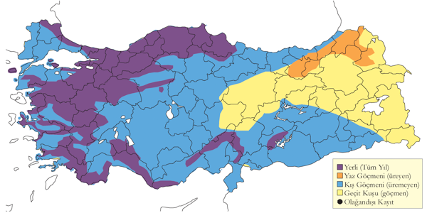
Üreme
Yaprak döken ve ibreli ormanlarda alçak düzlüklerde ürediği kadar tepelik ve dağlık bölgelerde de ürer. AKD. Şaşırtıcı bir şekilde türün ilk yuvası 2009 yılında tespit edilmiş, 27 Mayıs’ta Antalya Side’deki bir mezarlıktaki bir çam ağacında yerden yaklaşık 17 metre yükseklikte yumurtalarına kuluçkaya yattığı veya küçük yavruların üzerine oturduğu düşünülen bir erişkin gözlenmiştir. Gözlemci ağacın gövdesine bir dal parçası ile vurmuş, buna rağmen erişkin yuvan kalkmamıştır. Başka yerlerde yuva ağaçlarda 5 metrenin üzerindeki yüksekliklere yapılmış, yapraklı dal ve kabuklarla astarlanmış dallardan oluşan basit bir yapıdır, genellikle kuluçka büyüklüğü 4-5 yumurta kadardır. 23 Temmuz 1986 tarihinde Akseki yakınlarında bir aile kaydedilmiş, 11 Mayıs 1989’da yuvaya yiyecek taşıyan erişkin bir birey Dalyan’da gözlenmiş ve 11 Mayıs 1988’de Demirkazık yakınlarında bir yavru tespit edilmiştir. 1966 yılında Karanfil Dağı’nın kuzeybatısında muhtemelen yerleşik olarak üreyen bir çift vardı (Sutton ve Gray 1972). DOA. 12 Haziran 1975 tarihinde İspir ve İkizdere arasındaki dağlarda bir erişkin bireyin bir kaya kartalını A. chrysaetos taciz ettiği kaydedilmiştir. KAR. Kızılırmak Deltası’nda 1992 yılında muhtemelen ürediği kesinleştirilemeyen 1 ila 3 civarında çift gözlenmiştir, 5 Haziran 1992’de bir erkek bireyin izole bir koruluğa, belki de bir yuva, iki kez uçup geldiği tespit edilmiştir (Hustings & Dijk, 1994). MAR. 1993 yılında Kocaçay Deltası’nın alüvyal ormanlarında muhtemelen 1-2 çift üremiştir (Ertan 1996); ve Uludağ’da 1300 metre altındaki yüksekliklere sahip yarı açık alanlarda belirgin bir şekilde kaydedilmiştir (Jetz 1995). DOA. 1910-1911 yıllarında Erzurum’da uzun kavaklıklar olan mezarlıklarda ve bahçelerde yuva yapmış (McGregor 1917), bir erişkin bireyin Ardahan bölgesinde 10 Haziran 2004 tarihinde yuvaya yiyecek taşıdığı gözlenmiştir.
Alttürler ve Sınıflandırma
Türkiye’de nominat alttürü bulunur.
Çakır
Accipiter gentilis
Northern Goshawk
Lokal ve seyrek yerli, yaygın ve nispeten çok sayıda bulunan geçit türü ve kış konuğudur.
Deniz seviyesinden 2000 metre yüksekliklere kadar olan orman ve koruluklarda ürer. Büyük ihtimalle gözlemlerde çıkan sonuçlardan daha yaygın bir yayılışa sahiptir; Milchev (1994) 1988-1990 yıllarında Bulgaristan’ın Istranca Dağları kısmında yapmış olduğu kuş sayımları esnasında taradığı toplam 137 kilometrekarelik alanın 40 kilometrekaresinde (%40) türe rastlamıştır. Üreme mevsimi mart ayında başlar ve kur davranışları mayıs sonuna kadar devam eder.
Özellikle ülkenin kuzeydoğusunda, ağustos ortasından ekim sonuna kadar olan göç dönemiyle birlikte sonbahar ve kış aylarında daha yaygın ve sık görülebilir. Sonbaharda İstanbul Boğazı’nda ağustos ortasından itibaren ve özellikle eylülde çok az sayılarda kaydedilmiş olup, 1993 ilkbaharının başında 19 birey kaydedilmiştir. Bunun yanında Borçka-Hopa bölgesinden 1995 ilkbaharında maksimum 52 birey sayılmış, sonbahar genellikle eylülde görülmektedir. Kışın kıyısal sulakalanların da içinde olduğu daha açık habitatlarda görülürler.
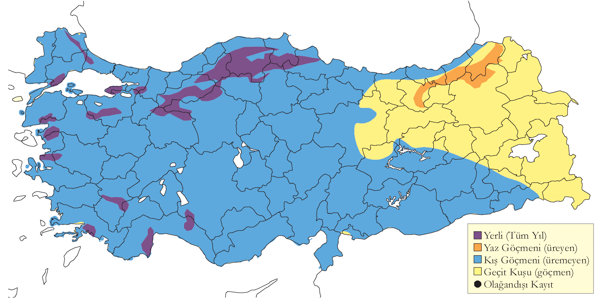
Üreme
Hem iğneli hem de yapraklarını döken yaşlı orman ve korular, deniz seviyesindeki düzlükler ve dağlı bölgelerde yamaçlarda ürer. Genellikle yüksek ağaçların tepesinde, dallardan oluşan basit bir yuva yapar. Türkiye’de yuvanın astarlanması ve kuluçka büyüklüğüyle ilgili veri yoktur, fakat başka yerlerde tür yuvasını yapraklı dallar, iğneli yapraklı ağaçların ibreleri ve kabuk parçalarıyla astarlar, yuvanın tepesinde azıcık bir oyuk mevcuttur ve yuva düzenli olarak üreme mevsimi boyunca onarılır. Kuluçka büyüklüğü olağan 3-4 ve azami 6 yumurtadır; Güneydoğu Avrupa’da genelde yumurtalar nisan ayı gibi bırakılır. KAR. 11 Haziran 1975’te İkizdere yakınlarında yaprak dökmeyen bir ormanda erişkin bir bireyin yiyecek taşıdığı, 17 Haziran 1975’te Çiftlik’te bir erkek bireyin territoryum davranışları sergilediği kaydedilmiştir. Kızılırmak Deltası’nda 1992’de 4 çiftin ürediği ve yuvalarının olduğu, bunlardan bir çiftin 31 Mart 1992’de izole bir korulukta, diğer üçünün ise 4 Haziran 1992’de bir bireyin yuvaya yiyecek taşır şekilde nisanın ikinci yarısında Yörükler Ormanı’nda tespit edilmiştir (Hustings & Dijk, 1994). MAR. 3 Mayıs 1993’te Kocaçay Deltası’nda Ekmekçi köyü yakınlardın bir yuva kaydedilmiştir (Ertan 1996). Mayıs 1996’da muhtemelen türün ürediği düşünülen Uludağ’da iğne yapraklı ormanların üzerinde kur davranışı gözlendi. AKD. 6 Haziran 1999 ve 11 Mayıs 1988 tarihlerinde sırasıyla Bolkar Dağları ve Akseki’de kur davranışı yapan erkek ile cinsiyeti belirsiz bir erişkin kaydedilmiştir. 13 Mayıs 1984’de Taşucu’nun iç kesimlerindeki kurak ağaçlık ve tepelik arazide bir erişkin birey yuvada görülmüştür (Cygnus Tour). İÇA. İç Anadolu’da ise 22 Mayıs 1972’de Nevşehir yakınlarında bir kavaklığın üzerinden erkek bireyin kur davranışı gösterdiği, 23 Temmuz 1994’te de Ayrancı yakınlarında bir yuva bulunduğu kayıtlara geçmiştir. Soğuksu Milli Parkında 21 Mayıs 1996 tarihinde bir erişkin bireyin bir kuzgunu taciz ettiği, yeni tüylenmiş iki yavrunun yiyecek için ötüşürken duyulduğu, daha sonra da 15 Temmuz 1993’te de görüldükleri kaydedilmiştir. Bu yumurtaların nisan ortasından sonra koyulduğuna işaret eder.
Alttürler ve Sınıflandırma
Muhtemelen marginatus alttürü bulunur ((Roselaar, 1995)). Bazı kaynaklara göre bu alttür nominat alttürün sinonimi olarak kabul edilmelidir, Ferguson-Lees ve Christie (2001).
Saz Delicesi
Circus aeruginosus
Western Marsh Harrier
Nispeten yaygın ve yer yer çok sayıda bulunan yerli ve yarı göçmeni yaygın ve çok sayıda bulunan geçit türü ve kış konuğudur.
Sazlarla kaplı geniş bataklıklarda yerleşik şekilde ürer. Genelde az ve orta büyüklükte gruplar halinde bulunurlar. 1992 ilkbaharında Kızılırmak Deltası’nda 250-275 çift olduğu tahmin edilmiştir (Hustings & Dijk, 1994).
İlkbahar göçü mart ortasından en az mayıs ortasına kadar devam eder. Sonbahar göçü ağustos sonu ve ekim ortası arasında olmaktadır. Göç dönemi dışındaki kayıtların kışlayan bireyler nedeniyle tam anlaşılamamaktadır. 1976 sonbaharında Borçka’da sayılan 385 birey Türkiye’de bir göç izleme noktasında ve Batı Palearktik’teki herhangi bir göç izleme noktasında kaydedilmiş en yüksek sayıydı. Benzer şekilde yakınlardaki 1994 ilkbaharında Hopa’da sayılan 254 birey önemli bir sayıdır.
Kış aylarında batı ve orta bölgelerde, başta büyük nehir deltalarında oldukça yaygındır. Malatya’da da az sayılarda kışladığı tespit edilmiştir.
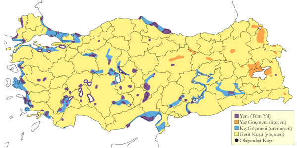
Üreme
Genelde büyük ve sık Phragmites sazlarıyla kaplı alanlarla, bazen de 1993’te Bolluk Gölü’ndeki 400 metrekarelik alanda olduğu gibi yaşlı sazların olduğu oldukça ufak küçük bataklıklarda ürer; Bunun yanında Eşmekaya Sazlığı’nda olduğu gibi Carex türü ve diğer alçak bataklık bitkilerinden oluşan alanlarda da ürer. Yuvasını sığ sularda yerden biraz yukarıya ya da kırılmış sazların üzerinde oluşan platforma yapar. Yuva otlarla astarlanmış, dal, saz, vb. malzemeden oluşan bir yığındır. Yumurta sayısı 3 (2 yuvada), 4 (10 yuvada), 5 (1 yuvada), 6 (2 yuvada). Yavru sayısı 3 (3 yuvada). İÇA. 15 Nisan 1996’da Sultansazlığı’nda, 8 Mayıs 1946’da da Mogan Gölü’nde yuva yapımı kaydedilmiş, en erkeni 23 Nisan’da ve çoğunluğu mayıs ayında 11 yuvanın yumurtalarla dolu olduğu, 20 Mayıs 1998 ve 16 Mayıs 2004 tarihlerinde sırasıyla içinde sadece 2 ve bir yumurta bulunan yuvalar tespit edilmiştir. Muhtemelen ilk yumurtaların 20 Nisan civarı bırakıldığı bir yuvada 24-27 Mayıs dolaylarında yumurtadan yeni çıkmış üç yavru görüldü. Yine ilk yumurtaların 5 Nisan civarında bırakıldığı tahmin edilen bir yuvada 15 Mayıs 2004 gibi oldukça erken bir tarihte yumurtandan yeni çıkmış yavrular kaydedilmiştir. DOA. 13 Haziran 2006’da Tödürge Gölü’nde bir yuvada 3 yumurta kaydedilmiştir. 27-28 Mayıs 1969 tarihinde iki çiftin Çenge Gölü’nde yuva yaptığı veya yuvayı tamir ettiği görülmüştür. 29 Temmuz 1999 tarihinde birçok genç birey tespit edilmiştir KAR. 19 Mayıs 1992’de Yeniçağa Gölü’nde bir yuvada 4 yumurtanın bulunduğu ve haziranın ilk 10 gününde birçok erişkin bireyin yiyecek taşıdığı belirlenmiştir (Hustings & Dijk, 1994). MAR. Kocaçay Deltası’nda 2 Mayıs ve 13 Haziran 1993 tarihlerinde yuvalar bulunmuş (Ertan 1996), 26 Nisan 1981 tarihinde de Terkos Gölü üzerinde türün kur davranışı yaptığı gözlemlenmiştir.
Alttürler ve Sınıflandırma
Türkiye’de nominat alttürü bulunur.
Gökçe Delice
Circus cyaneus
Hen Harrier
Yaygın ve nispeten çok sayıda bulunan geçit türü ve kış konuğudur.
Genellikle 1500 metreden daha alçak sulakalanlarda görülür. Oysa tür, Türkiye’nin büyük bir kısmında eylül başında gelir ve nisan sonuna kadar kalır. Her ne kadar bazı alanlarda ufak gruplar halinde geceleseler de çoğunlukla tek bireyler halinde görülürler. Nisan başı gibi geriye göçün en yoğun dönemi yaşanır. Bilinen göç izleme noktalarından çok az kayıt mevcuttur, örneğin P. Dunes tarafından 1993 ilkbaharı başlarında İstanbul Boğazı’nda 17 birey kaydedilmiştir (Zalles ve Bildstein 2000) 2006’da yapılan kapsamlı sayımda 23 Mart ve 28 Nisan 2010’da toplam 92 tane (Üner vd.2010, Sandgrouse 32: 20-33), 2010 yılında 15 Mart ve 31 Mayıs arasında toplam 119 tanesi sayılmış olup (İKGT 2010), bu rakam Türkiye’deki ve Orta Doğu’daki yırtıcı gözlem noktaları arasındaki en yüksek toplamdır (Shirihai vd. 2000).
Türün üreme durumu bilinmemektedir. Kumerloeve (1969a), Van’ın Erciş ilçesi dolaylarında bulunan sel suları altında kalmış Altındere düzlüklerinde 3 Ağustos 1968 tarihinde tüyleri yeni çıkmış iki yavrusuyla bir çift, 10 Haziran 1968’de Doğu Anadolu’da yeri tespit edilemeyen yerde uygun üreme habitatında bir erkek ve Aktaş Gölü’ndeki adada bir yuva tespit edilmiştir (Bilgin ve Demirci 2002 makalesinde G. Sarıgül). Kuzeydoğu, Doğu ve Güney Anadolu’da yazlayan bireylerin 5 yeni kaydı mevcuttur. Temmuz ayında bir kez İç Anadolu’da kaydedilmiştir. Tür Ermenistan’da üremezken (Adamian ve Klem 1999) komşu Gürcistan’da üremektedir (Massa ve Fontana 2004).
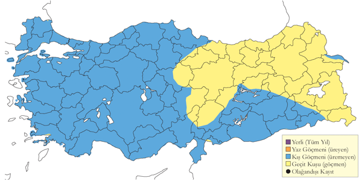
Üreme
Türkiye’de yuvalamaz.
Alttürler ve Sınıflandırma
Türkiye’de nominat alttürü bulunur.
Bozkır Delicesi
Circus macrourus
Pallid Harrier
Yaygın ancak nispeten seyrek geçit türü, lokal ve az sayıda kış konuğudur.
Aksaray Eşmekaya çevresinde tek bir noktada üremektedir. Warncke (1970) 1970’in Mayıs sonunda Tuz Gölü civarında 10-13 çiftin bulunduğu bir üreme alanı keşfettiğini iddia eder, ancak burada çayır delicesiyle karıştırma ihtimalini düşünmek gerekir. Güneydoğu Anadolu’da 2 Haziran 2002’de Siverek civarında görülen birey muhtemelen bahar göçünde geç kalmış bir birey olabilir. Tür, son birkaç on yıllık sürede İç Anadolu ve Doğu Anadolu’da mayıs sonu - haziran aylarında defalarca kaydedilmiş, fakat üreme ispatlanmamıştır (Groh 1971, Kirwan vd. 2003).
Göç eden bireylerin nisan ortalarında azami sayılara ulaştığı bahar göçü mart ortasından mayıs sonuna kadar, sonbahar göçü ise ağustos sonundan ekim ortasına kadar devam eder. İlkbahar göçünde dişiler biraz daha geç göç eder. Sonbaharda göç eden bireyler eylül ayında maksimum sayılara ulaşır. 1838 ilkbaharında Dickson ve Ross (1839) Erzurum’da “çok fazla” olarak tanımlamış, 1976 sonbaharında Borçka’da azami 133 birey sayılmış olup (Andrews vd. 1977) buradan geçen toplam kuş muhtemelen çok daha fazladır. Buna ek olarak Alléon ve Vian (1869, 1870) İstanbul Boğazı’nda kaydetmiştir (Nisbet ve Smout 1957).
Kışın Çukurova ve Göksu Deltası’nda düzenli şekilde azami 5 kuş görülür. Diğer kıyı bölgelerinde, Marmara, Karadeniz, Akdeniz ve İç Anadolu’dan kayıtları vardır.
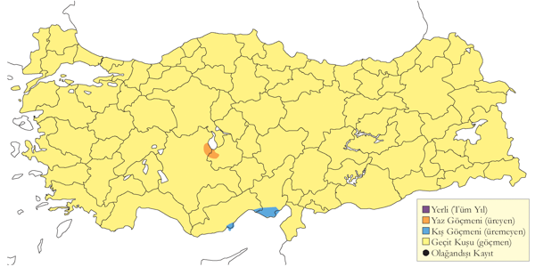
Üreme
Sadece eskiden oldukça büyük sığ bir bataklık olan ve Carex su bitkileriyle kaplı, etrafında kuru tarım, meyvecilik yapılan ve yoğun şekilde hayvan otlatılan Eşmekaya yakınlarında üremiştir. 1977 Haziran sonunda bir yuvada oldukça büyümüş üç yavru kaydedilmiştir. 1993’te iki yuva bulunmuş, biri yaklaşık 100 mm derinliğin, diğerinden daha kalın temellidir (Pleasance 1997): Düz bir çayır topağı üzerinde hemen yanında bulunan çayır delicesi P. pygargus yuvalarıyla aynı şekilde yapılmış ot ve ayrıktan oluşan ortası basık yuvalar yapmıştır. 11 Mayıs 1993’te aynı yuvada 4 yumurta, 27 Mayıs 1993’te 3 yumurta ve yumurtadan yeni çıkmış bir yavru, 30 Mayıs 1993’te 3 günlük 3 yavru ve döllenmemiş olduğu anlaşılan bir yumurta, 15 Haziran 1993’te 3 yavru (en büyüğü 20 günlük) kaydedilmiştir. Bu yuvadaki ilk yumurta 25-26 Nisan 1993 tarihinde bırakılmış olmalıdır. Başka bir yuvada ise 12 Mayıs 1993’te 3 yumurta, 16 Mayıs 1993’te 4 yumurta kaydedilmiş, muhtemelen takip eden günlerde başka yumurtaların da eklendiği bu yuvanın 27 Mayıs 1993 tarihinde boş olduğu tespit edildi. Muhtemelen yırtıcı bir hayvan bu yuvayı yok etmiştir. Bu yuvada da ilk yumurta hemen yanında bulunan ve 11 Mayıs 1993 tarihinde 1 ve 2 yumurta bulunan iki çayır delicesi yuvasıyla uyumlu olacak şekilde 7-8 Mayıs 1993 tarihlerinde bırakılmış olmalıdır. Aynı sazlıkta 2 Haziran 1996 tarihinde erkek bir bozkır delicesinin dişi bir çayır delicesine “yiyecek verdiği” (Davidson ve Kirwan 1997) ve daha önce 12 Mayıs 1996 tarihinde aynı erkek bireyin bu dişi çayır delicesi bireye aktif bir şekilde kur yaptığı gözlenmiştir. Bu iki tür arasında olabilecek melezleşme çok ender gerçekleşen bir olaydır (Forsman 1993).
Alttürler ve Sınıflandırma
Monotipik bir türdür.
Çayır Delicesi
Circus pygargus
Montagu’s Harrier
Lokal ve az sayıda yaz konuğu, yaygın ve seyrek geçit türüdür.
Özellikle bataklık sulakalanlarda, nemli çayırlarda ve bozkırlardaki tarım alanlarında yuvalar. En büyük üreme kolonisinin Doğu Anadolu’dur. Üreyen birey sayısı 500 çifti geçmez.
Çok sık görüldüğü dönem göç dönemleridir, ilkbaharda maksimum sayıların nisan sonu mayıs başı gibi olduğu göç mart sonunda başlar ve mayıs sonu biter. Sonbaharda maksimum sayıların eylül ayında görülen göç ağustos başı başlar ve ekim ortasına kadar devam eder. Üç büyük göç izleme noktasında iki mevsimde de çok az sayılarda kaydedilmiştir. Bunun aksine 9-10 Eylül 1989 tarihinde Çıldır Gölü’nde 115 birey (Huber ve Barbalat 1990) ve 19 Nisan - 27 Mayıs tarihleri arasında sadece 6 günde Rize Fırtına Deresi ağzında 63-64 birey kaydedilmiştir. Bu noktada maksimum geçiş 41 bireyle 27 Mayıs tarihinde gerçekleşmiştir (Faldbord 1994). Aralık 2001 tarihinde de Göksu Deltası’ndan bir kaydı mevcuttur (Kuşçu Bülteni 10:7). İkinci kış kaydı İstanbul Riva civarında 19 Aralık 2010’da yapılmıştır.
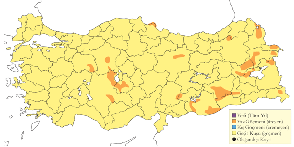
Üreme
Sıklıkla bataklıklarda, sazların arasında ve sular altında kalmış çayırlarda ürerler. Genelde bitki örtüsünün gür olduğu yerlerde yere, kındıra ve kuru otlardan orta kısmı oyuk bir yuva yapar. Türkiye’de gözlenen yumurta sayısı 4 (5 yuvada) ve 5 (2 yuvada). Yavru sayısı: 4 (1 yuvada). İÇA. Verilerin çoğu Eşmekaya’dan gelir. Haziran 1977’de 18’inin yuvaya yem taşıdığı üreyen en az 21 çift, 20-21 Haziran 1977’de ikisinde 4, birinde 5 yumurta bulunan toplam 5 yuvada iki yavru, iki yumurta ve 5-10 günlük 4 yavru kaydedilmiş; iki yuvanın birbirinden 50 metre kadar uzakta oldukları tespit edilmiştir (Schubert 1979). 11 Haziran 1971’de içinde küçük bir yavru olan başka bir yuva kaydedilmiştir. 11 Mayıs 1993’de içlerinde bir ve iki yumurta olan iki yuvayla, 16 Mayıs 1993’te ise içinde 4 yumurta olan başka bir yuva belirlenmiştir. 19 Mayıs 1998’de bir dişi bireyin içinde bir yumurta olan yuvaya yuva malzemesi taşıdığı tespit edilmiştir. 15 Mayıs 2004’de içinde 5 yumurta olan bir yuva ile ile 16 Mayıs 2004’te içinde 4 yumurta olan başka bir yuva ise kaydedilen diğer yuvalardır. 12 Mayıs 1996’da, çoğu erkek 35 bireyde yine burada kaydedilmiştir. 13-14 Mayıs 1970’de Yarma’da erişkinlerin yuva olduğundan şüphelenilen bir yere yiyecek taşıdıkları görülmüş olsa da bu tarihlerde yuvada yavru olmayacağından muhtemelen bu bir kur yapmak için yiyecek taşıma olarak değerlendirilmelidir. KAR. Haziran 1971’de Kızılırmak Deltası’nda 4 çift, 5 yavru ve yavrusunu besleyen bir çift birey kaydedilmiş (Dijksen & Kasparek, 1985), 1992 Mayıs’ın ilk yarısında erişkin bireylerin yuva malzemesi taşıdığı görülmüştür (Hustings & Dijk, 1994). GDA. 19 Haziran 1988’de Birecik’te Fırat Nehri üzerindeki iğne yapraklı ağaçlar kaplı adanın hemen kenarındaki hendekte bir çift yuvalamıştır. DOA. 23 Temmuz 1987’de Bulanık yakınlarında çocukların türün yavrularıyla oynadığı, 30 Temmuz 2000 tarihinde de Bendimahi sazlıklarında iki genç birey kaydedilmiştir.
Alttürler ve Sınıflandırma
Monotipik bir türdür.
Kızıl Çaylak
Milvus milvus
Red Kite
Nadir ve düzensiz geçit türü ve kış konuğudur.
Genellikle ormanlık alanlarda görülürler ve ürediklerine dair herhangi bir veri yoktur. Karadeniz Bölgesi’nden son on yıllarda iki kaydı bulunur (Kirwan ve Martins 2000, Kirwan vd. 2003). En geç 9 Haziran tarihinde kaydedilmiştir.
Eskiden yapılan sayımlarda sonbahar geçişlerinde ağustos sonu ile eylül sonu arasında İstanbul Boğazı’nda daha düzenli görülmüştür. Diğer düzenli göç noktalarında çok nadir görülmüş, Boğaziçi’nde sadece bir bahar kaydı mevcuttur (Collman ve Croxall 1967). 21 Eylül 1968 tarihinde Van ve Sero arasında 150 civarında bireyin görüldüğü iddia edilmiş, çoğunlukla soluk renkli genç kara çaylakla ve özellikle de kışın ve göç zamanı görülen lineatus alttürüyle karıştırıldığından bunun gibi birçok kaydı geçersizdir. Kumerloeve’nin (1967) kuzeydoğu ve doğu Anadolu’da türün durumu ve yayılışıyla yapmış olduğu değerlendirmeler geçerli olmayabilir.
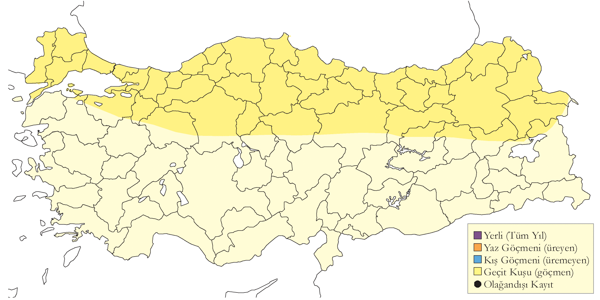
Üreme
Türkiye’de yuvalamaz.
Alttürler ve Sınıflandırma
Türkiye’de nominat alttürü bulunur.
Kara Çaylak
Milvus migrans
Black Kite
Nispeten yaygın, yer yer çok sayıda bulunan yaz konuğu, yaygın geçit türü, lokal ve çok sayıda bulunan kış konuğudur.
Tüm bölgelerde 3000 metreye kadar ürer. Genellikle yerleşim alanlarında ya da oralara yakın yerlerde yuvalarlar. İstanbul’da 1991 yılına kadar düzenli olarak üremiştir. Nisan 1967’de Manyas Gölü’nde karışık balıkçıl kolonisinin içinde iki birey yuvalamış, yerleşimlerden uzak yerlerde yuvalama örneği oluşturmuştur.
Modern kayıt sistemi başlamadan önce (1966’da) İstanbul Boğazı’nda yapılan sayımlara göre eskiden bol görülen bir göçmen üreyen ve geçiş türüdür. Şimdi her ne kadar fazla sık ve yaygın görülmemektedir.
Bahar göçü mart başında başlar, mayıs ayında en yüksek sayılara ulaşırlar ve haziran başına kadar ülkenin kuzeyinde azımsanmayacak sayılarda bireyler göç etmeye devam eder. Rize’de Fırtına Deresi ağzında 8 Nisan - 10 Haziran 1993 tarihleri arasında 2664 birey ve sadece 1 Mayıs’ta 727 birey sayılmıştır (Faldbord 1994), Artvin’de Hopa yakınlarında 21 Mart - 14 Mayıs 1994 tarihleri arasında ise 9069 birey geçiş yapmıştır. 16 Mart - 10 Haziran 1992 tarihleri arasında Kızılırmak Deltası’nda 698 birey kaydedilmiştir (Hustings & Dijk, 1994). Sonbahar göçü ağustos ortasında başlar, ekim sonuna kadar devam eder. İstanbul Boğazı’nda sayılan maksimum birey 1971’de göç dönemi boyunca 2707 ve sadece 31 Ağustos’ta 440 birey, Borçka’da 1976’de 5775 (Andrew vd. 1977) ve 1976’da Belen Geçidi’nde 506 bireydir (Sutherland ve Brooks 1981a).
Güneydoğu Anadolu’da düzenli olarak ve yer yer kalabalık sürüler halinde kışlar. Gaziantep’te 23 Haziran 2001’de 400, Gaziantep’in 25 km kadar güneydoğusunda en az 600 birey kaydedilmiştir. Ceylanpınar’da 1000’i aşkın sürüler kışlar. Çukurova’da Seyhan Nehri kıyısında 11 Şubat 2006 tarihinde görülen 100 birey kışlamıştır.
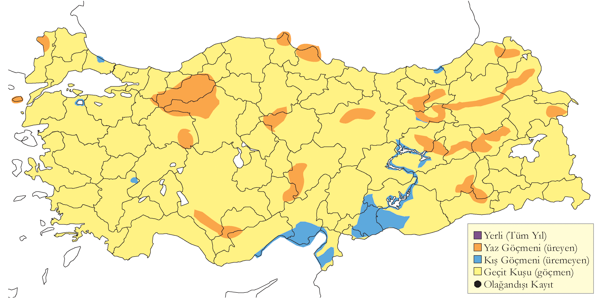
Üreme
Etrafında ağaç ve koruluklar olan açık düzlüklerde genellikle yerleşim yerlerine yakın yerlerde ürerler. Genelde ağaçlara yuva yapsalar da İstanbul’da bir camiye yuva yaptıkları gibi binalara da yuva yapabilirler. Yuvaların tepesi sığ bir oyuk şeklinde ve çerçöple yapılmış, etrafı da ot, kâğıt, kumaş ve tüylerden oluşan bir birikintiyle astarlanmıştır. Yumurta sayısı 2 (5 yuvada), 3 (7 yuvada). Yavru sayısı 3 (2 yuvada). İÇA. Sarayönü’nde 23 Nisan 1964’te bir korulukta 10-15 çiftin ürediği görülmüş, bireylerin halen kur davranışı ve yuva yaptıkları gözlemlenmiş, iki yuvanın ikişer yumurta, bir yuvada ise 3 yumurta olduğu kaydedilmiştir. Yine aynı yerde 10 Mayıs 1964’te 15-20 çift gözlemlenmiş, üçer yumurtanın bulunduğu 5 yuva ile ikişer yumurtanın bulunduğu 3 yuva gözlemlenmiştir, fakat aynı sıralarda 23 Nisan 1964 tarihinde Akşehir Gölü’nün doğusunda bulunan ufak bir kolonide henüz yuvalara gelen olmamıştı (Warncke 1964-1965). Pozantı’da (Adana) 21 Temmuz 1971 tarihinde gözlenen ve henüz yumurtadan yeni çıkmış 3 yavrusunu korumaya çalışan iki erişkin birey burada yumurta bırakmanın Mayıs başı gibi olduğunu gösteriyor. 1907 yılında İç Anadolu’da şehir ve kasabalara yapılan gözlemlerde 30 Haziran itibariyle yerleşimlere yakın yuvalardaki yavruların tamamen tüylendiği, ancak henüz uçamadıkları, 26 Mayıs’ta Karadağ civarında boş bir yuva, 19 Mayıs’ta Eskişehir yakınlarında bir yuvada yeni bırakılmış yumurtalar, Konya’da bir bahçede bir yuvada iki yumurta ve bir yavru (Ramsay 1914). Bu da gösteriyor ki bu bölgede yumurta bırakılması nisan sonlarına denk geliyor. MAR. 1907’de özellikler de İstanbul’da çok yaygın oldukları ve yumurta bırakmanın 11-12 Mayıs gibi olduğu görülmektedir (Ramsay 1914). İstanbul’da 1930’lardaki 500’lü sayılarda bulunan çift sayısı 1970’lerin ortasına gelindiğinde 10 çiftin altına kadar düşmüştür (Acar vd. 1977). 17-22 Nisan 1966’da iki erişkin birey İstanbul’daki ağaçlarda bulunan iki yuvada kuluçkada otururken ve bir çiftin de 21 Nisan 1966’da bir okul çatısında çiftleştikleri görülmüştür. Manyas Gölü’nde 1966-1967 yıllarında karışık bir balıkçıl kolonisinde çiftlerin ürediği, bu çiftlerin nisan ortası gibi bölgeyi sahiplendikleri ve 16 Mayıs 1967 tarihinde bir söğüt ağacında bulunan yuvaya 3 yumurta bıraktıkları kaydedilmiştir. DOA. Yaz aylarında Erzurum ve Van civarında 40-50 birey düzenli olarak görülmekte ve bir çiftin de Van’ın doğusunda 2 Mayıs 1983 tarihinde yuva yaptıkları bilinmektedir. 27 Mayıs 1969’da Erçek Gölü yakınlarında (Kasparek ve van der Ven 1983) ve 4 Haziran 2002’de Selim’de (Kars) bulunan iğne yapraklı bir ormanda erişkin bireylerin yuva malzemesi taşıdığı gözlenmiştir: Bu tarihler normal yuva yapım tarihleriyle karşılaştırıldığında oldukça geç tarihlerdir, fakat diğer tüm yırtıcı kuşlar gibi, kara çaylakların da mevsim ilerledikçe yuvalarını ekstra malzemeyle güçlendirdikleri bilinmektedir.
Alttürler ve Sınıflandırma
Üreyen ve orta ve batı bölgelerinden geçiş yapan nominat alttürdür. Özellikle doğu bölgelerinden geçiş yapan ve Güneydoğu Anadolu’da kalabalık sürüler halinde kışlayanların öne sürülen lineatus alttürü olduğu iddia edilmiştir (Sibley ve Monroe 1990).
Ak Kuyruklu Kartal
Haliaeetus albicilla
White-tailed Eagle
Çok lokal ve az sayıda yerli, daha yaygın kış konuğudur.
Şu an ciddi anlamda nesli tehlike altındadır ve üreme statüleri ise net değildir. 10 ila 20 çift Ege, Akdeniz Bölgesinin belli kesimlerinde ve İç Anadolu’nun kuzey ve İç Batı Karadeniz’de üremektedir. Türün ürediği bu alanlar 19. yüzyıldan ve 20. yüzyılın ilk yarısından beri bilinmektedir. Tucker ve Heath (1994) üreyen çift sayısının 10 ila 30 arasında olduğunu düşünmüşlerdir. Her ne kadar sonbahar başında Kars yakınlarında Çıldır Gölü civarında az sayılarda kaydedilmişse de bu kaydın üreme mi yoksa göç kaydı mı olduğu belli değildir.
Genellikle göç zamanı ve kış aylarında daha yaygındırlar. Özellikle ülkenin üçte ikilik batı kısmında göçmen bireylerin de gelmesiyle kış aylarında üreme popülasyonları küçük artışlar gösterir. Sonbaharda eylül ayında 5 bireyden daha az sayılarda İstanbul Boğazı ve Borçka/Hopa bölgesinden rapor edilmiştir. Ancak geçişin ağustos ve kasım arasında geniş bir dönemde olduğu dikkate alınmalıdır. İlkbahar aylarında mart sonundan mayısa kadar daha da az görülürler. 21 Mart - 23 Mayıs 1993 tarihleri arasında muhtemelen göçmen olan 8 birey Kızılırmak Deltası’nda kaydedilmiştir (Hustings & Dijk, 1994). İç Anadolu ve Karadeniz bölgesinde yapılan az sayıdaki kayıtlar eski kış popülasyonlarına göre daha sınırlı bir yayılış olduğunu göstermektedir. Türün 20. yüzyılın ilk yarısına kadar varlık gösterdiği Güneydoğu Anadolu’dan ise artık kaydı bulunmamaktadır. Ogilvie’nin (1954) 1940ların ortasında “kıyı bölgelerde epey yaygın” kaydına baktığımızda aslında türün popülasyonunda olan azalmanın da ne zaman başladığını açıkça görebiliyoruz. Ege ve Akdeniz bölgelerinde, başta Bafa Gölü/Büyük Menderes deltası (genelde 1-2 birey) ila daha sonra Göksu deltası (3-4 birey) olmak üzere halen küçük sayılarda düzenli bir şekilde görülmektedir. 1970lerin ortasına kadar ürediğini (Dijksen & Kasparek, 1985) ve düzenli şekilde kışladıklarını (5 bireye kadar) bildiğimiz Kızılırmak Deltası’nda birkaç kaydı mevcuttur.
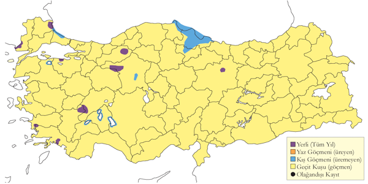
Üreme
Eski, yeni ve muhtemel üreme alanları genelde deniz seviyesinde, yakın tepelerin eteklerinde ya da göllerin etrafındaki alçak kesimlerde bulunur, fakat yeni iki üreme alanı iç kesimlerdeki göllerin yakınlarında bulunan dağlık alanlarda bulunur. Genellikle orman içlerinde düz ya da yamaçlarda bulunan yaşlı ve uzun ağaçlarda, bazen de kendi başlarına bulunan tek ağaçlarda yuva yaparlar. Genellikle başta çam olmak üzere kavak, meşe ve dişbudak ağaçlarında, bazen de iç kesimlerde yarlarda yuva yaparlar (Danford 1877-78, 1880). Farklı yıllarda territoryum başına en az iki yuva kullanılır. Yuva yıllar boyunca kullanımdan dolayı dev bir yapıya benzer, dallardan ve orta kısımda sığ bir oyuktan oluşur. Mevsim boyunca yenilenen taze yapraklı çubuklarla etrafı astarlanır. Türkiye’de gözlenen yumurta sayısı 1 (3 yuvada), 2 (5 yuvada), 3 (2 yuvada). Yavru sayısı bilinmemektedir. Danford (1877-78) iç kesimlerdeki yuvaların alçak yarlara yapıldığını söylemiştir. AKD. 30 Nisan 1876 tarihinde Aladağlar’da (Niğde) bulunan boş bir yuvayı ziyaret etmiş, Mayıs 1876’da ise oldukça yüksek ince bir ağacın en tepe dallarının üzerindeki bir yuvadan yuvada bulunan tek yumurtayı almıştır. 14 Mayıs 1972’de Elmalı (Antalya) güneyinde Düden Gölü’nde bir erişkin bireyin muhtemelen yeni yuva değil de eski bir yuvayı güçlendirmek için yuva malzemesi taşıdığı gözlemlenmiştir. GDA. Birecik’te Danford, 18 Şubat 1879’da çalılarla kaplı bir yarın ucunda bulunan iki yuvadan yumurta almış. DOA. 9 Mart 1879’da Malatya yakınlarında tek bir köknar ağacı üzerinde bulunan yuvadan yumurta almış. Bu iki bölgeden 2 ve 3 adet halinde kuluçka evresinin son anlarına gelmiş toplam 5 yumurtayı almıştır (Danford 1880). EGE. Selous (1900), 14 Mayıs 1899 tarihinde İzmir yakınlarında büyük bir göle uzanan yamaçlardaki tek bir köknar ağacında bir tek çiftin yuvaladığı bir yuva büyük bir çerçöp yığını halinde bulmuş. Tring Doğa Tarihi Müzesi’nde bulunan 8 (4 tane ikişer) yumurta 20 Haziran 1902, 1 Şubat 1902 ve 2 Şubat 1902 tarihlerinde Bafa Gölü’nden almış, daha sonra yine Tring’de bulunan 2 (2 tane birer) yumurtayı da 8 ve 16 Şubat 1902 tarihlerinde Beşparmak Dağı’ndan (Denizli) götürmüştür. Kumerloeve (1963) 5 Nisan 1930 tarihinde Antakya civarında içinde 3 yumurta bulunan bir yuvadan bahseder. 4 Mayıs 1996 tarihinde Işıklı Gölü (Denizli) yakınlarındaki Akdağ civarında ulaşılması zor uzun bir vadide bir çam ağacı tepesinde bir yuva kaydedilmiştir (Heredia vd. 1997). 26 Mayıs 2001 tarihinde Köyceğiz Gölü’nde bir çift gözlenmiş ve bu çiftin muhtemelen çevrede bir yerde ürediği tahmin edilmektedir (Magnin ve Yarar 1997). Ürediği iyi bilinen Bafa Gölü’nde 30 Nisan 2003 tarihinde ormanlık bir yamaçta çalı ve dikenlerin altına kadar geçişe müsaade etmediği yerden yaklaşık 20 metre yükseklikte bir çam ağacının tepesinde etrafında otların çıktığı boş bir yuva kaydedilmiş; yöredeki balıkçılardan biri gölün tam aksi istikametinde aynı yılın mart ayında yine bir çam ağacının üzerinde içinde türün kuluçkaya yattığı bir yuva olduğunu söylemiştir. KAR. Kızılırmak Deltası’nda 9 Haziran 1969 tarihinde Balık Gölü civarındaki bir korulukta 10 metre yüksekliğinde bir ağaçta bulunan yuvadan bir erişkin bireyin uçtuğu görülmüş, Temmuz-Ağustos 1971’de dördü dişbudak biri meşede olmak üzere eski 5 yuva tespit edilmiş, 22 Temmuz 1971 tarihinde 2 erişkin ve 2 yavru birey kaydedilmiş, fakat herhangi bir üreme emaresine rastlanılmamıştır (Hustings & Dijk, 1994). 19 Mayıs 1992’de Yeniçağa Gölü’nde bir genç birey kaydedilmiştir. MAR. Bir ya da iki çiftin ürediği Kocaçay Deltası’nda (Bursa) 1993’te terk edilmiş bir yuva (Ertan 1996) ve 24 Haziran 1999’da da boş bir yuva tespit edilmiştir.
Alttürler ve Sınıflandırma
Monotipik bir türdür.
Paçalı Şahin
Buteo lagopus
Rough-legged Buzzard
Lokal ve nadir kış konuğudur.
Genelde sulakalanlarda ya da etrafında, bazen de bozkır, hatta ormanlık alanlarda görülürler. Özellikle çok kötü hava koşullarının olduğu dönemlerde bazı bireyler aynı bölgede haftalarca kalabilirler. Düzenli bir şekilde Kızılırmak Deltası’ndan kayıtları mevcuttur. İç ve Doğu Anadolu bölgelerinde çok daha az sayıda kaydı vardır. Ege, Akdeniz bölgeleri ve eski Amik Gölünün bulunduğu Hatay ili kadar güneyde kaydı mevcuttur (Kumerloeve 1967). Eskiden daha sık görülüyor olabilir (Kumerloeve 1957d). Kayıtlar her ne kadar aralık sonundan şubat ayına kadar olsa da türün ülkedeki varlığı ekim ortasından nisan sonuna kadar devam eder ve tür mart sonuna kadar düzenli bir şekilde görülür.
İlkbahar göçünde İstanbul Boğazı’nda az sayıda düzenli olarak görülür (Kumerloeve 1957a, d, Collman ve Croxall 1967, Zalles ve Bildstein yayınında P. Denes). Hopa’da 1993-1995 yıllarından her yıl; Kızılırmak Deltası’nda 22 Mart - 25 Nisan 1992 arasında 12 birey kaydedilmiştir (Hustings & Dijk, 1994). Bunun yanında her ne kadar Kumerloeve (1967d) 1960’ların başında Kuzeydoğu Anadolu’da ufak grupların hareket ettiğini bildirmişse de elimizde türün sonbahar göçüne ait yeni kayıtlar bulunmamaktadır.
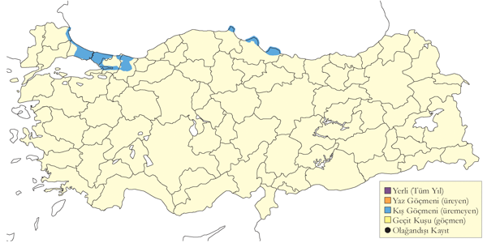
Üreme
Türkiye’de yuvalamaz.
Alttürler ve Sınıflandırma
Türkiye’de nominat alttürü bulunur.
Kızıl Şahin
Buteo rufinus
Long-legged Buzzard
Yaygın ve çok sayıda bulunan yerli ve yarı göçmendir.
Büyük ölçüde açık habitatlarda, kısmen de kuru tarım yapılan tarım arazileriyle bozkır ve 4000 metre yüksekliğe kadar olan dağlık bölgelerde görülür.
İlkbahar göçünde 20 Mart ve 31 Mayıs 2006 arasında toplam 28 kuş İstanbul Boğazı’ndan geçmiş olup (Üner vd. 2010) genellikle göçmen olmayan bu tür için kayda değer bir rakamdır. Buna rağmen bu çalışmanın başladığı 15 Mart’tan önce geçiş olup olmadığı bilinmemektedir. Bu çalışmanın tekrarı 2010 yılında yapıldığında 15 Mart ve 31 Mayıs 2010 arasında toplam 43 tanesi sayılmış olup, bugüne kadar en yüksek sayıdır (İKGT 2010).
Sonbahar aylarında İstanbul Boğazı ve Borçka’da az sayılarda kaydedilir. Sonbahar ve kış aylarında kıyı bölgelerinde biraz daha sık ve yaygındırlar.
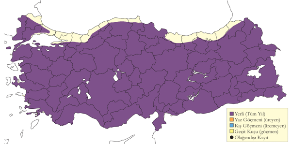
Üreme
Kuru açıklık alanlar, yarlı tepeler ve kaya çıkıntıları olan bozkır alanlarda ürer. Genellikle bir yarda kayanın çıkıntı yapan kısmında, ağaçlarda ve direklerde yuvar yapar. Yuva, etrafı ot, ince çubuk, bitkisel materyal ve yünle astarlanmış ortası görece çukur büyük dal yığını şeklindedir; Eskişehir yakınlarında 1879 Nisan ayı ortasında bir yuvanın deve tüyüyle astarlandığı kayıtlara geçmiştir (Danford 1880). Aynı yuva yıllarca kullanılabilir ya da aynı yar üzerinde bulunan iki ya da daha fazla yuva her yıl dönüşümlü olarak kullanılır. 14 Mayıs 2004’te Elmalı (Antalya) yakınlarındaki bir elektrik direği tepesinde görülen bir yuvada yuva dallarının arasında mavi bir naylon poşetin de kullanıldığı ve yuvanın altındaki kısımlara birçok söğüt serçesinin yuva yaptığı kaydedilmiştir. Horasan yakınlarında başka bir direk tepesi yuvada naylon poşet kullanıldığı da görülmüştür. Eski yuvalar takip eden yıllarda ulu doğan tarafından da kullanılabilir. Yumurta sayısı 1 (1 yuvada), 2 (2 yuvada), 3 (2 yuvada), 4 (3 yuvada), 5 (1 yuvada). Yavru sayısı 1 (1 yuvada), 2 (2 yuvada), 3 (4 yuvada), 4 (4 yuvada). İÇA. Kur davranışı mart sonunda, yuva yapımı 21 Mart 1969’da görülmüştür. En geç kaydı 28 Mayıs’ta yapılan 10 yuvada en erken yumurta kayıt 3 Nisan’da tespit edilmiştir. Yumurtaların muhtemelen mart sonu nisan başı bırakıldığı 7 yuvada mayıs ayının son 10 gününde yaklaşık 4 haftalık yavrular kaydedilmiştir. Yeni tüylenmiş yavrular ise 10 Haziran 1973 tarihinde gözlemlenmiştir. AKD. 23 Mart 1993’te Taşucu’nun kuzeyinde kur davranışında bulunan bir çift ile 19 Nisan 2004’te Akseki’de çiftleşen bir çift kaydedilmiştir. Yumurtalarının nisan ayının başında bırakıldığı düşünülen Aladağlar’da bir yuvada 30 Nisan 1876’da 4 yumurtalık bir kuluçka tespit edilmiştir (Danford 1878). GDA. 9 Mayıs 2004’te Durnalık yakınlarından muhtemelen yumurtaların Martın 3. haftasında bırakıldığı tahmin edilen bir yuvada 2-3 haftalık 4 yavru kaydedilmiştir ve bu yuva 2006 senesinde yeniden kullanılmış, 12 Haziran 2006’da tüyleri yeni çıkmış bir yavru görülmüştür. 29 Mayıs 1987’de Birecik’te dört yavrusuyla beraber bir çift kaydedilmiştir. DOA. Yumurtaların nisan sonu bırakıldığı bir yuvada 25 Haziran 2004’te Horasan yakınlarında 3-4 haftalık iki yavruyu besleyen bir erişkin birey tespit edilmiş; Haziran başında yavrulu iki yuva ve 1992 Ağustos başında da dört aile gözlenmiştir.
Alttürler ve Sınıflandırma
Türkiye’de nominat alttürü bulunur.
Şahin
Buteo buteo
Common Buzzard
Yaygın ve çok sayıda bulunan yerli ve yarı göçmen, çok yaygın ve çok sayıda bulunan geçit türü ve kış konuğudur.
Ormanlık ve dağlık alanlarda deniz seviyesinden en az 2200 metre yüksekliklere kadar ürer. Üreme sonrası dağılması haziranın ikinci haftası gibi gayet erken bir zamanda başlar (OST 1975).
Sonbaharda göç izleme noktalarından oldukça yaygın ve görece sık görülen, büyük sayılarda kaydedilen bir türdür. İlkbaharda ise mayıs ortasına kadar düzenli küçük gruplar halinde mart ortasından başlayıp haziran başına kadar göçer şekilde görülürler. Artvin Hopa civarında 21 Mart - 14 Mayıs tarihleri arasında toplam, 136.327, sadece 6 Nisan’da 16.333 birey sayılmış, 31 Mart -10 Haziran 1993 arasında Rize Fırtına Deresi ağzında toplam 17.928 tane, sadece 30 Nisan’da 3879 tane kaydedilmiştir (Faldborg 1994). Bu sayılar Kuzeydoğu Anadolu’nun ilkbahar aylarında önemli bir göç noktası olduğunu gösteriyor. İstanbul Boğazı’nda 2006 ilkbaharında mart ortasından mayıs sonuna kadar 16.348 birey sayılmıştır (Üner vd. 2000).
Sonbaharda göç ağustos ortasından ekim sonuna kadar gerçekleşir ve türün en yüksek sayılarda göç ettiği zaman ise eylül sonu ekim başıdır. Göçün en yoğun olduğu dönemlerde Belen Geçidi’nde sürekli bir sayım hiç yapılmamıştır. 1969 sonbaharında en çok bireyin kaydedildiği günün 6142 bireyle 25 Eylül 1972 olduğu İstanbul Boğazı’ndaki toplamda 32.895 birey sayılmıştır. Borçka’daki ilk önemi sayımda 1976 sonbaharında 205.000 birey sayılmış ve bu sayılan kuşların 135.000’i 28 Eylül 1976’da kaydedilmiştir (Andrews vd. 1977). Borçka’da yapılan diğer önemli sayımlar şöyle: 19 Eylül 1978’de 73.000 (Magnin 1989), 20 Eylül-2 Ekim 1980’de 165.871 ve sadece 22 Eylül 1980’de 70.000, 1 Ekim 1990’da 152.000 - 170.000’dir (Kasparek 1992a).
Kışın daha çok alçak ve orta yüksekliklerde küçük gruplar halinde görülürler. Genelde ülkenin kuzey ve batısında kaydedilse de batı ve orta bölgelerinde daha sıktır.
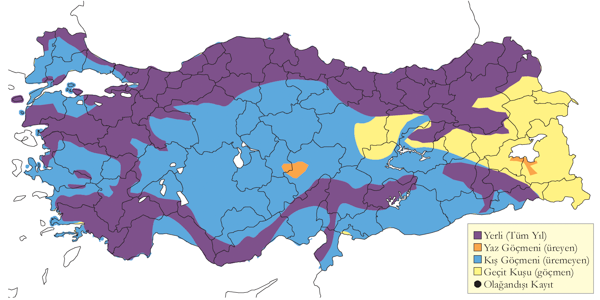
Üreme
Genellikle dağlık ve ormanlık alanlarda ürer. Yuvalarını yaşlı ağaçlarda ya da yarlarda yapar. Yuva, yapraklı dallarla astarlanmış, ortası az çukur dallardan oluşan büyük bir yapıdır. Yumurta: Türkiye’den veri yoktur, yumurta sayısı 2-4 arasında, ortalama 3’tür. Yavru sayısı 3 (1 yuvada). MAR. 1993’te yapılan ayrıntılı araştırılan Kocaçay Deltası’nda 2-3 çiftin ürediği (Ertan 1996) ve Akyazı ile Mudurnu arasında 30 Temmuz 1992’de yuvada bir çiftin varlığı görülmüştür. KAR. 13 Haziran 1995’te İkizdere yakınlarında bir erişkin bireyin yiyecek taşıdığı kaydedilmiştir. 12 çiftin Yörükler Ormanı’nda kaydedildiği Kızılırmak Deltası’nda 1992 yılında 16-20 çiftin ürediği tahmin edilmektedir. Yörükler Ormanı’ndaki yuvalardan ikisinin kullanıldığı ve birinde 23 Mayıs 1993’de bir yavru olduğu tespit edilmiştir, yavrunun boyutuna bakıldığında muhtemelen bu yuvada yumurta bırakımı nisan ortası ya da daha erken tarihlerde olmaktadır. İÇA. 7 Haziran 1995’te Kalecik’te uygun üreme habitatından 4 erişkin birey kaydedilmiş, geç tarihten dolayı bir tanesinin yuva yapımı için değil de tahminen yuva onarımı için malzeme taşıdığı kaydedilmiştir. 26 Haziran 1992’de Kızılcahamam yakınlarında içinde tamamen tüylenmiş ve kanat alıştırmaları yapan 3 yavrunun olduğu bir yuva tespit edilmiştir, muhtemelen bu yuvada da yumurta bırakımı nisan ortası gibidir. Yunanistan’ın Midilli adasında bir ağacın yaklaşık 4 metre yüksekliğinde bulunan zayıf şekilde yapılmış bir yuvada 4 Mayıs 1995’te iki yumurta ve 28 Mayıs 1995’te de yarı büyümüş iki yavru kaydedilmiştir. Bu yuvada da muhtemel yumurta bırakma tarihleri nisan ortasına denk gelmektedir.
Alttürler ve Sınıflandırma
Ülke genelinde ve özellikle göç ve geçit döneminde ağırlıkla. vulpinus alttürü bulunur. Kuzeydoğu Anadolu’da ise buna çok benzeyen menetriesi alttürü mevcuttur. Özellikle Trakya ve İstanbul Boğazı’nda kışın en soğuk günlerinde buteo alttürün özelliklerinin gösteren kuşlar sıkla görülür.